Welcome to RISCV-BOOM’s documentation!¶
The Berkeley Out-of-Order Machine (BOOM) is a synthesizable and parameterizable open-source RISC-V out-of-order core written in the Chisel hardware construction language. The goal of this document is to describe the design and implementation of the core as well as provide other helpful information to use the core.
Useful Links¶
The BOOM source code can be found here: https://github.com/riscv-boom/riscv-boom.
The main supported mechanism to use the core is to use the Chipyard framework: https://github.com/ucb-bar/chipyard.
The BOOM website can be found here: https://boom-core.org.
The BOOM mailing list can be found here: https://groups.google.com/forum/#!forum/riscv-boom.
Quick-start¶
The best way to get started with the BOOM core is to use the Chipyard project template. There you will find the main steps to setup your environment, build, and run the BOOM core on a C++ emulator. Chipyard also provides supported flows for pushing a BOOM-based SoC through both the FireSim FPGA simulation flow and the HAMMER ASIC flow. Here is a selected set of steps from Chipyard’s documentation:
# Download the template and setup environment
git clone https://github.com/ucb-bar/chipyard.git
cd chipyard
./scripts/init-submodules-no-riscv-tools.sh
# build the toolchain
./scripts/build-toolchains.sh riscv-tools
# add RISCV to env, update PATH and LD_LIBRARY_PATH env vars
# note: env.sh generated by build-toolchains.sh
source env.sh
cd sims/verilator
make CONFIG=LargeBoomConfig
Note
Listing 1 assumes you don’t have riscv-tools toolchain installed. It will pull and build the toolchain for you.
Table of Contents¶
The Berkeley Out-of-Order Machine (BOOM)¶

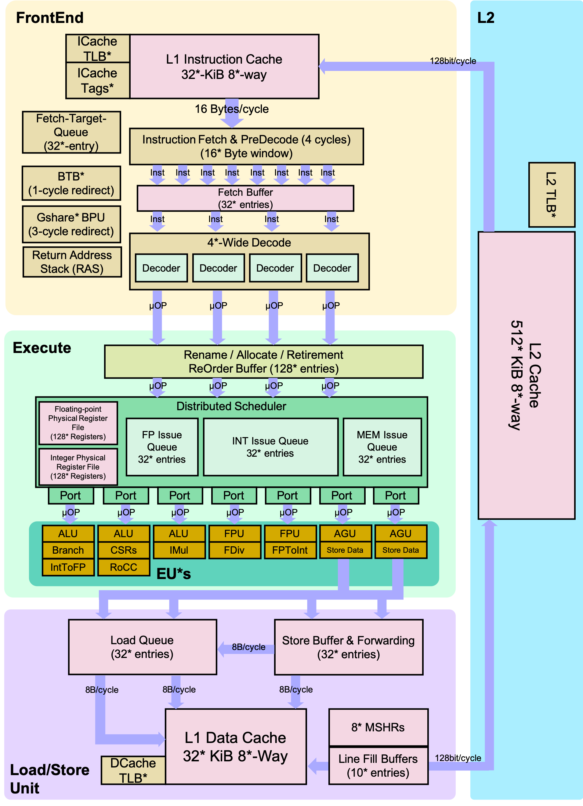
Detailed BOOM Pipeline. *’s denote where the core can be configured.
The Berkeley Out-of-Order Machine (BOOM) is heavily inspired by the MIPS R10000 [1] and the Alpha 21264 [2] out–of–order processors. Like the MIPS R10000 and the Alpha 21264, BOOM is a unified physical register file design (also known as “explicit register renaming”).
BOOM implements the open-source RISC-V ISA and utilizes the Chisel hardware construction language to construct generator for the core. A generator can be thought of a generialized RTL design. A standard RTL design can be viewed as a single instance of a generator design. Thus, BOOM is a family of out-of-order designs rather than a single instance of a core. Additionally, to build an SoC with a BOOM core, BOOM utilizes the Rocket Chip SoC generator as a library to reuse different micro-architecture structures (TLBs, PTWs, etc).
| [1] | Yeager, Kenneth C. “The MIPS R10000 superscalar microprocessor.” IEEE micro 16.2 (1996): 28-41. |
| [2] | Kessler, Richard E. “The alpha 21264 microprocessor.” IEEE micro 19.2 (1999): 24-36. |
The BOOM Pipeline¶
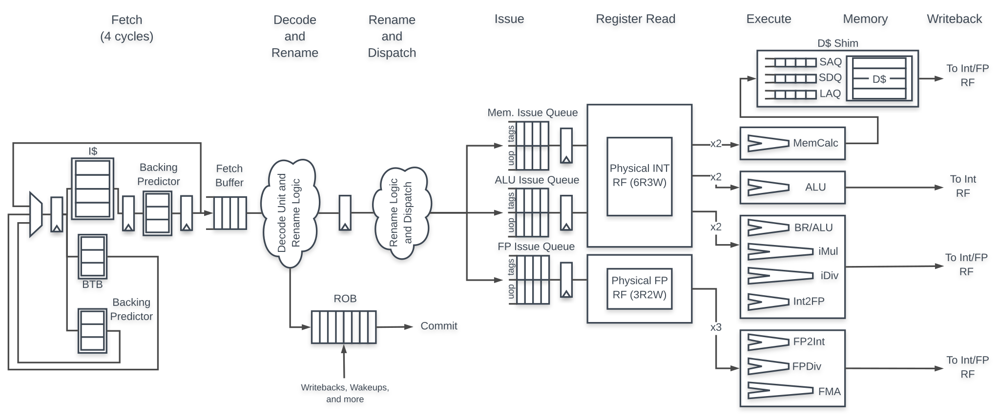
Simplified BOOM Pipeline with Stages
Overview¶
Conceptually, BOOM is broken up into 10 stages: Fetch, Decode, Register Rename, Dispatch, Issue, Register Read, Execute, Memory, Writeback and Commit. However, many of those stages are combined in the current implementation, yielding seven stages: Fetch, Decode/Rename, Rename/Dispatch, Issue/RegisterRead, Execute, Memory and Writeback (Commit occurs asynchronously, so it is not counted as part of the “pipeline”). Fig. 2 shows a simplified BOOM pipeline that has all of the pipeline stages listed.
Stages¶
Fetch¶
Instructions are fetched from instruction memory and pushed into a FIFO queue, known as the Fetch Buffer . Branch prediction also occurs in this stage, redirecting the fetched instructions as necessary. [1]
Decode¶
Decode pulls instructions out of the Fetch Buffer and generates the appropriate Micro-Op(s) (UOPs) to place into the pipeline. [2]
Rename¶
The ISA, or “logical”, register specifiers (e.g. x0-x31) are then renamed into “physical” register specifiers.
Issue¶
UOPs sitting in a Issue Queue wait until all of their operands are ready and are then issued. [3] This is the beginning of the out–of–order piece of the pipeline.
Register Read¶
Issued UOPs s first read their register operands from the unified Physical Register File (or from the Bypass Network)…
Execute¶
… and then enter the Execute stage where the functional units reside. Issued memory operations perform their address calculations in the Execute stage, and then store the calculated addresses in the Load/Store Unit which resides in the Memory stage.
Memory¶
The Load/Store Unit consists of three queues: a Load Address Queue (LAQ), a Store Address Queue (SAQ), and a Store Data Queue (SDQ). Loads are fired to memory when their address is present in the LAQ. Stores are fired to memory at Commit time (and naturally, stores cannot be committed until both their address and data have been placed in the SAQ and SDQ).
Writeback¶
ALU operations and load operations are written back to the Physical Register File.
Commit¶
The Reorder Buffer (ROB), tracks the status of each instruction in the pipeline. When the head of the ROB is not-busy, the ROB commits the instruction. For stores, the ROB signals to the store at the head of the Store Queue (SAQ/SDQ) that it can now write its data to memory.
Branch Support¶
BOOM supports full branch speculation and branch prediction. Each instruction, no matter where it is in the pipeline, is accompanied by a Branch Tag that marks which branches the instruction is “speculated under”. A mispredicted branch requires killing all instructions that depended on that branch. When a branch instructions passes through Rename, copies of the Register Rename Table and the Free List are made. On a mispredict, the saved processor state is restored.
Detailed BOOM Pipeline¶
Although Fig. 2 shows a simplified BOOM pipeline, BOOM supports RV64GC and the privileged ISA which includes single-precision and double-precision floating point, atomics support, and page-based virtual memory. A more detailed diagram is shown below in Fig. 3.
Detailed BOOM Pipeline. *’s denote where the core can be configured.
| [1] | While the Fetch Buffer is N-entries deep, it can instantly read
out the first instruction on the front of the FIFO. Put another way,
instructions don’t need to spend N cycles moving their way through
the Fetch Buffer if there are no instructions in front of
them. |
| [2] | Because RISC-V is a RISC ISA, currently all instructions generate only a single Micro-Op (UOP) . More details on how store UOPs are handled can be found in The Memory System and the Data-cache Shim. |
| [3] | More precisely, Micro-Ops (UOPs) that are ready assert their request, and the issue scheduler within the Issue Queue chooses which UOPs to issue that cycle. |
The Chisel Hardware Construction Language¶
BOOM is implemented in the Chisel hardware construction language. Chisel is an embedded DSL within Scala that supports advanced hardware design using highly parameterized generators. It is used within multiple projects in academia (e.g. Rocket Chip, FireSim, etc) as well as in industry (Google Edge TPU).
More information about can be found at http://chisel-lang.org.
The RISC-V ISA¶
The RISC-V ISA is a widely adopted open-source ISA suited for a variety of applications. It includes a base ISA as well as multiple optional extensions that implement different features. BOOM implements the RV64GC variant of the RISC-V ISA (otherwise known as IMAFDC) [1]. This includes the MAFDC extensions and the privileged specification (multiply/divide, AMOs, load-reserve/store-conditional, single-precision and double-precision IEEE 754-2008 floating point).
RISC-V provides the following features which make it easy to target with high-performance designs:
Relaxed memory model
- This greatly simplifies the Load/Store Unit (LSU), which does not need to have loads snoop other loads nor does coherence traffic need to snoop the LSU, as required by sequential consistency.
Accrued Floating Point (FP) exception flags
- The FP status register does not need to be renamed, nor can FP instructions throw exceptions themselves.
No integer side-effects
- All integer ALU operations exhibit no side-effects, other than the writing of the destination register. This prevents the need to rename additional condition state.
No cmov or predication
- Although predication can lower the branch predictor complexity of small designs, it greatly complicates out-of-order pipelines, including the addition of a third read port for integer operations.
No implicit register specifiers
- Even JAL requires specifying an explicit register. This simplifies rename logic, which prevents either the need to know the instruction first before accessing the rename tables, or it prevents adding more ports to remove the instruction decode off the critical path.
Registers rs1, rs2, rs3, rd are always in the same place
- This allows decode and rename to proceed in parallel.
More information about the RISC-V ISA can be found at http://riscv.org.
| [1] | Currently, BOOM does not implement the proposed “V” vector extension. |
Rocket Chip SoC Generator¶
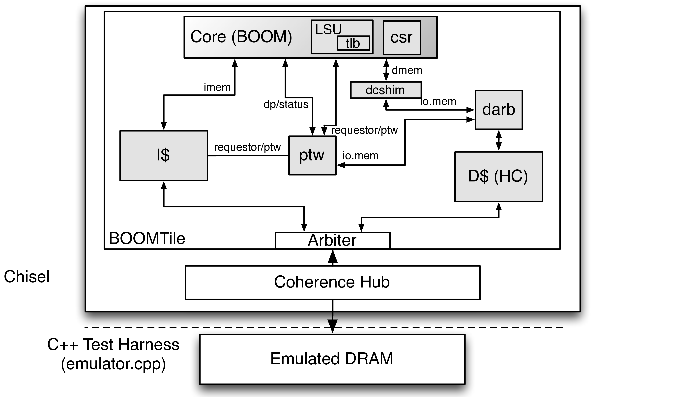
A single-core “BOOM-chip”, with no L2 last-level cache
As BOOM is just a core, an entire SoC infrastructure must be provided. BOOM was developed to use the open-source Rocket Chip SoC generator. The Rocket Chip generator can instantiate a wide range of SoC designs, including cache-coherent multi-tile designs, cores with and without accelerators, and chips with or without a last-level shared cache. It comes bundled with a 5-stage in-order core, called Rocket, by default. BOOM uses the Rocket Chip infrastructure to instantiate it’s core/tile complex (tile is a core, L1D/I$, and PTW) instead of a Rocket tile.
To get more information, please visit the Chipyard Rocket Chip documentation.
The Rocket Core - a Library of Processor Components!¶
From BOOM’s point of view, the Rocket core can be thought of as a “Library of Processor Components.” There are a number of modules created for Rocket that are also used by BOOM - the functional units, the caches, the translation look-aside buffers (TLBs), the page table walker (PTW), and more. Throughout this document you will find references to these Rocket components and descriptions on how they fit into BOOM.
To get more information about the Rocket core, please visit the Chipyard Rocket Core documentation.
Note
Both Chipyard links point to the dev documentation of Chipyard to get the most recent documentation changes.
Instruction Fetch¶
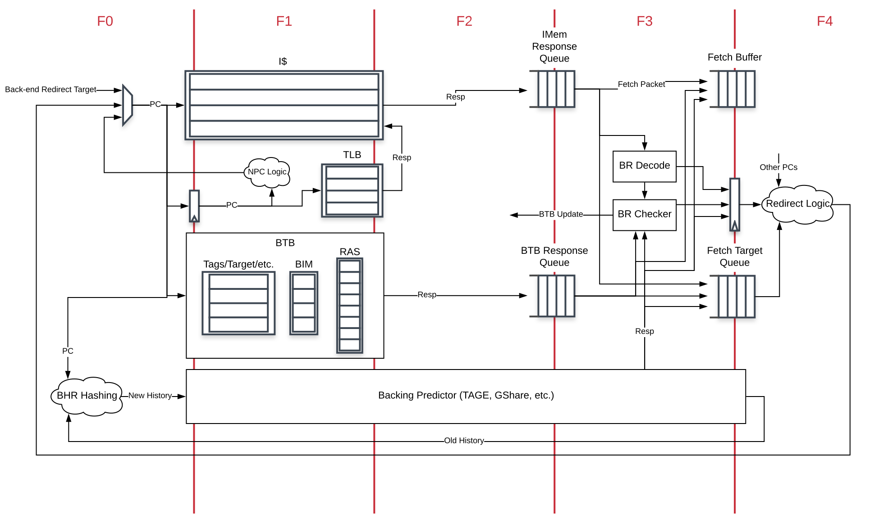
The BOOM Front-end
BOOM instantiates its own Front-end , similar to how the Rocket core(s) instantiates its own Front-end . This Front-end fetches instructions and makes predictions throughout the Fetch stage to redirect the instruction stream in multiple fetch cycles (F0, F1…). If a misprediction is detected in BOOM’s Back-end (execution pipeline), or one of BOOM’s own predictors wants to redirect the pipeline in a different direction, a request is sent to the Front-end and it begins fetching along a new instruction path. See Branch Prediction for more information on how branch prediction fits into the Fetch Stage’s pipeline.
Since superscalar fetch is supported, the Front-end retrieves a Fetch Packet of instructions from instruction memory and puts them into the Fetch Buffer to give to the rest of the pipeline. The Fetch Packet also contains other meta-data, such as a valid mask (which instructions in the packet are valid?) and some branch prediction information that is used later in the pipeline. Additionally, the PC and branch prediction information is stored inside of the Fetch Target Queue which holds this information for the rest of the pipeline.
The Rocket Core I-Cache¶
BOOM instantiates the i-cache taken from the Rocket processor source code. The i-cache is a virtually indexed, physically tagged set-associative cache.
To save power, the i-cache reads out a fixed number of bytes (aligned) and stores the instruction bits into a register. Further instruction fetches can be managed by this register. The i-cache is only fired up again once the fetch register has been exhausted (or a branch prediction directs the PC elsewhere).
The i-cache does not (currently) support fetching across cache-lines, nor does it support fetching unaligned relative to the superscalar fetch address. [1]
The i-cache does not (currently) support hit-under-miss. If an i-cache miss occurs, the i-cache will not accept any further requests until the miss has been handled. This is less than ideal for scenarios in which the pipeline discovers a branch mispredict and would like to redirect the i-cache to start fetching along the correct path.
Fetching Compressed Instructions¶
This section describes how the RISC-V Compressed ISA extension was implemented in BOOM. The Compressed ISA Extension, or RVC enables smaller, 16 bit encodings of common instructions to decrease the static and dynamic code size. “RVC” comes with a number of features that are of particular interest to micro-architects:
- 32b instructions have no alignment requirement, and may start on a half-word boundary.
- All 16b instructions map directly into a longer 32b instruction.
During the Front-end stages, BOOM retrieves a Fetch Packet from the i-cache, quickly decodes the instructions for branch prediction, and pushes the Fetch Packet into the Fetch Buffer. However, doing this brings up a particular set of issues to manage:
- Increased decoding complexity (e.g., operands can now move around).
- Finding where the instruction begins.
- Removing
+4assumptions throughout the code base, particularly with branch handling. - Unaligned instructions, in particular, running off cache lines and virtual pages.
The last point requires some additional “statefulness” in the Fetch Unit , as fetching all of the pieces of an instruction may take multiple cycles.
The following describes the implementation of RVC in BOOM by describing the lifetime of a instruction.
- The Front-end returns Fetch Packet s of fetchWidth *16 bits wide. This was supported inherently in the BOOM Front-end .
- Maintain statefulness in F3, in the cycle where Fetch Packet s are dequeued from the i-cache response queue and enqueued onto the Fetch Buffer .
- F3 tracks the trailing 16b, PC, and instruction boundaries of the last Fetch Packet . These bits are combined with the current Fetch Packet and expanded to fetchWidth *32 bits for enqueuing onto the Fetch Buffer . Predecode determines the start address of every instruction in this Fetch Packet and masks the Fetch Packet for the Fetch Buffer .
- The Fetch Buffer now compacts away invalid, or misaligned instructions when storing to its memory.
The following section describes miscellaneous implementation details.
- A challenging problem is dealing with instructions that cross a Fetch Boundary. We track these instructions as belonging to the Fetch Packet that contains their higher-order 16 bits. We have to be careful when determining the PC of these instructions, by tracking all instructions which were initially misaligned across a Fetch Boundary .
- The pipeline must also track whether an instruction was originally
16b or 32b, for calculating
PC+4orPC+2.
The Fetch Buffer¶
Fetch Packet s coming from the i-cache are placed into a Fetch Buffer . The Fetch Buffer helps to decouple the instruction fetch Front-end from the execution pipeline in the Back-end .
The Fetch Buffer is parameterizable. The number of entries can be changed and whether the buffer is implemented as a “flow-through” queue [2] or not can be toggled.
The Fetch Target Queue¶
The Fetch Target Queue is a queue that holds the PC received from the i-cache and the branch prediction info associated with that address. It holds this information for the pipeline to reference during the executions of its Micro-Ops (UOPs) . It is dequeued by the ROB once an instruction is committed and is updated during pipeline redirection/mispeculation.
| [1] | This constraint is due to the fact that a cache-line is not stored in a single row of the memory bank, but rather is striped across a single bank to match the refill size coming from the uncore. Fetching unaligned would require modification of the underlying implementation, such as banking the i-cache such that consecutive chunks of a cache-line could be accessed simultaneously. |
| [2] | A flow-through queue allows entries being enqueued to be immediately dequeued if the queue is empty and the consumer is requesting (the packet “flows through” instantly). |
Branch Prediction¶
The BOOM Front-end
This chapter discusses how BOOM predicts branches and then resolves these predictions.
BOOM uses two levels of branch prediction - a fast Next-Line Predictor (NLP) and a slower but more complex Backing Predictor (BPD) [1]. In this case, the NLP is a Branch Target Buffer and the BPD is a more complicated structure like a GShare predictor.
The Next-Line Predictor (NLP)¶
BOOM core’s Front-end fetches instructions and predicts every cycle where to fetch the next instructions. If a misprediction is detected in BOOM’s Back-end, or BOOM’s own Backing Predictor (BPD) wants to redirect the pipeline in a different direction, a request is sent to the Front-end and it begins fetching along a new instruction path.
The Next-Line Predictor (NLP) takes in the current PC being used to fetch instructions (the Fetch PC) and predicts combinationally where the next instructions should be fetched for the next cycle. If predicted correctly, there are no pipeline bubbles.
The NLP is an amalgamation of a fully-associative Branch Target Buffer (BTB), Bi-Modal Table (BIM) and a Return Address Stack (RAS) which work together to make a fast, but reasonably accurate prediction.
NLP Predictions¶
The Fetch PC first performs a tag match to find a uniquely matching BTB entry. If a hit occurs, the BTB entry will make a prediction in concert with the RAS as to whether there is a branch, jump, or return found in the Fetch Packet and which instruction in the Fetch Packet is to blame. The BIM is used to determine if that prediction made was a branch taken or not taken. The BTB entry also contains a predicted PC target, which is used as the Fetch PC on the next cycle.

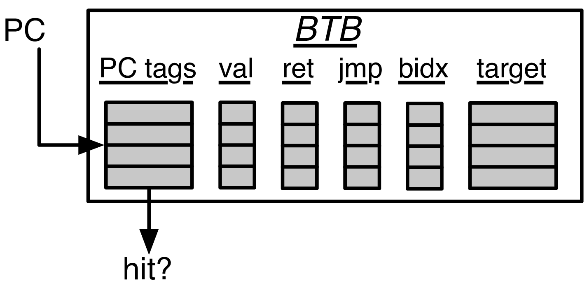
The Next-Line Predictor (NLP) Unit. The Fetch PC scans the BTB’s “PC tags” for a match. If a match is found (and the entry is valid), the Bi-Modal Table (BIM) and RAS are consulted for the final verdict. If the entry is a “ret” (return instruction), then the target comes from the RAS. If the entry is a unconditional “jmp” (jump instruction), then the BIM is not consulted. The “bidx”, or branch index, marks which instruction in a superscalar Fetch Packet is the cause of the control flow prediction. This is necessary to mask off the other instructions in the Fetch Packet that come over the taken branch
The hysteresis bits in the BIM are only used on a BTB entry hit and if the predicting instruction is a branch.
If the BTB entry contains a return instruction, the RAS stack is used to provide the predicted return PC as the next Fetch PC. The actual RAS management (of when to or the stack) is governed externally.
For area-efficiency, the high-order bits of the PC tags and PC targets are stored in a compressed file.
NLP Updates¶
Each branch passed down the pipeline remembers not only its own PC, but also its Fetch PC (the PC of the head instruction of its Fetch Packet ). [2]
BTB Updates¶
The BTB is updated only when the Front-end is redirected to take a branch or jump by either the Branch Unit (in the Execute stage) or the BPD (later in the Fetch stages). [3]
If there is no BTB entry corresponding to the taken branch or jump, an new entry is allocated for it.
RAS Updates¶
The RAS is updated during the Fetch stages once the instructions in the Fetch Packet have been decoded. If the taken instruction is a call [4] , the return address is pushed onto the RAS. If the taken instruction is a return, then the RAS is popped.
Superscalar Predictions¶
When the NLP makes a prediction, it is actually using the BTB to tag match against the predicted branch’s Fetch PC, and not the PC of the branch itself. The NLP must predict across the entire Fetch Packet which of the many possible branches will be the dominating branch that redirects the PC. For this reason, we use a given branch’s Fetch PC rather than its own PC in the BTB tag match. [5]
| [2] | In reality, only the very lowest bits must be saved, as the higher-order bits will be the same. |
| [3] | The BTB relies on a little cleverness - when redirecting the PC on a misprediction, this new Fetch PC is the same as the update PC that needs to be written into a new BTB entry’s target PC field. This “coincidence” allows the PC compression table to use a single search port - it is simultaneously reading the table for the next prediction while also seeing if the new Update PC already has the proper high-order bits allocated for it. |
| [4] | While RISC-V does not have a dedicated call instruction, it can be inferred by checking for a JAL or JALR instruction with a writeback destination to x1 (aka, the return address register). |
| [5] | Each BTB entry corresponds to a single Fetch PC, but it is helping to predict across an entire Fetch Packet. However, the BTB entry can only store meta-data and target-data on a single control-flow instruction. While there are certainly pathological cases that can harm performance with this design, the assumption is that there is a correlation between which branch in a Fetch Packet is the dominating branch relative to the Fetch PC, and - at least for narrow fetch designs - evaluations of this design has shown it is very complexity-friendly with no noticeable loss in performance. Some other designs instead choose to provide a whole bank of BTBs for each possible instruction in the Fetch Packet . |
The Backing Predictor (BPD)¶
When the Next-Line Predictor (NLP) is predicting well, the processor’s Back-end is provided an unbroken stream of instructions to execute. The NLP is able to provide fast, single-cycle predictions by being expensive (in terms of both area and power), very small (only a few dozen branches can be remembered), and very simple (the Bi-Modal Table (BIM) hysteresis bits are not able to learn very complicated or long history patterns).
To capture more branches and more complicated branching behaviors, BOOM provides support for a Backing Predictor (BPD).
The BPD ‘s goal is to provide very high accuracy in a (hopefully) dense area. The BPD only makes taken/not-taken predictions; it therefore relies on some other agent to provide information on what instructions are branches and what their targets are. The BPD can either use the BTB for this information or it can wait and decode the instructions themselves once they have been fetched from the i-cache. This saves on needing to store the PC tags and branch targets within the BPD [7].
The BPD is accessed throughout the Fetch stages and in parallel with the instruction cache access and BTB (see Fig. 8). This allows the BPD to be stored in sequential memory (i.e., SRAM instead of flip-flops). With some clever architecting, the BPD can be stored in single-ported SRAM to achieve the density desired.
The BOOM Front-end. Here you can see the BTB and Branch Predictor on the lower portion of the diagram. The instructions returning from the instruction cache are quickly decoded; any branches that are predicted as taken from the BTB or Backing Predictor (BPD) will redirect the Front-end from the F4 stage. Prediction snapshots and metadata are stored in the Branch Rename Snapshots (for fixing the predictor after mispredictions) and the Fetch Target Queue (FTQ) (for updating the predictors in the Commit stage).
Making Predictions¶
When making a prediction, the BPD must provide the following:
- is a prediction being made?
- a bit-vector of taken/not-taken predictions
As per the first bullet-point, the BPD may decide to not make a prediction. This may be because the predictor uses tags to inform whether its prediction is valid or there may be a structural hazard that prevented a prediction from being made.
The BPD provides a bit-vector of taken/not-taken predictions, the size of the bit-vector matching the Fetch Width of the pipeline (one bit for each instruction in the Fetch Packet ). A later Fetch stage will will decode the instructions in the Fetch Packet , compute the branch targets, and decide in conjunction with the BPD ‘s prediction bit-vector if a Front-end redirect should be made.
Jump and Jump-Register Instructions¶
The BPD makes predictions only on the direction (taken versus not-taken) of conditional branches. Non-conditional “jumps” (JAL) and “jump-register” (JALR) instructions are handled separately from the BPD . [8]
The NLP learns any “taken” instruction’s PC and target PC - thus, the NLP is able to predict jumps and jump-register instructions.
If the NLP does not make a prediction on a JAL instruction, the pipeline will redirect the Front-end in F4 (see Fig. 5). [9]
Jump-register instructions that were not predicted by the NLP will be sent down the pipeline with no prediction made. As JALR instructions require reading the register file to deduce the jump target, there’s nothing that can be done if the NLP does not make a prediction.
Updating the Backing Predictor¶
Generally speaking, the BPD is updated during the Commit stage. This prevents the BPD from being polluted by wrong-path information. [10] However, as the BPD makes use of global history, this history must be reset whenever the Front-end is redirected. Thus, the BPD must also be (partially) updated during Execute when a misprediction occurs to reset any speculative updates that had occurred during the Fetch stages.
When making a prediction, the BPD passes to the pipeline a “response info packet”. This “info packet” is stored in the Fetch Target Queue (FTQ) until commit time. [11] Once all of the instructions corresponding to the “info packet” is committed, the “info packet” is set to the BPD (along with the eventual outcome of the branches) and the BPD is updated. The Fetch Target Queue (FTQ) for Predictions covers the FTQ , which handles the snapshot information needed for update the predictor during Commit. Rename Snapshot State covers the Branch Rename Snapshots , which handles the snapshot information needed to update the predictor during a misspeculation in the Execute stage.
Managing the Global History Register (GHR)¶
The Global History Register (GHR) is an important piece of a branch
predictor. It contains the outcomes of the previous N branches (where
N is the size of the GHR ). [12]
When fetching branch i, it is important that the direction of the
previous i-N branches is available so an accurate prediction can be
made. Waiting until the Commit stage to update the GHR
would be too late (dozens of branches would be inflight and not
reflected!). Therefore, the GHR must be updated
speculatively, once the branch is fetched and predicted.
If a misprediction occurs, the GHR must be reset and updated to reflect the actual history. This means that each branch (more accurately, each Fetch Packet ) must snapshot the GHR in case of a misprediction. [13]
There is one final wrinkle - exceptional pipeline behavior. While each branch contains a snapshot of the GHR , any instruction can potential throw an exception that will cause a Front-end redirect. Such an event will cause the GHR to become corrupted. For exceptions, this may seem acceptable - exceptions should be rare and the trap handlers will cause a pollution of the GHR anyways (from the point of view of the user code). However, some exceptional events include “pipeline replays” - events where an instruction causes a pipeline flush and the instruction is refetched and re-executed. [14] For this reason, a commit copy of the GHR is also maintained by the BPD and reset on any sort of pipeline flush event.
The Fetch Target Queue (FTQ) for Predictions¶
The Reorder Buffer (see The Reorder Buffer (ROB) and the Dispatch Stage ) maintains a record of all inflight instructions. Likewise, the FTQ maintains a record of all inflight branch predictions and PC information. These two structures are decoupled as FTQ entries are incredibly expensive and not all ROB entries will contain a branch instruction. As only roughly one in every six instructions is a branch, the FTQ can be made to have fewer entries than the ROB to leverage additional savings.
Each FTQ entry corresponds to one Fetch cycle. For each prediction made, the branch predictor packs up data that it will need later to perform an update. For example, a branch predictor will want to remember what index a prediction came from so it can update the counters at that index later. This data is stored in the FTQ .
When the last instruction in a Fetch Packet is committed, the FTQ entry is deallocated and returned to the branch predictor. Using the data stored in the FTQ entry, the branch predictor can perform any desired updates to its prediction state.
There are a number of reasons to update the branch predictor after Commit. It is crucial that the predictor only learns correct information. In a data cache, memory fetched from a wrong path execution may eventually become useful when later executions go to a different path. But for a branch predictor, wrong path updates encode information that is pure pollution – it takes up useful entries by storing information that is not useful and will never be useful. Even if later iterations do take a different path, the history that got it there will be different. And finally, while caches are fully tagged, branch predictors use partial tags (if any) and thus suffer from deconstructive aliasing.
Of course, the latency between Fetch and Commit is inconvenient and can cause extra branch mispredictions to occur if multiple loop iterations are inflight. However, the FTQ could be used to bypass branch predictions to mitigate this issue. Currently, this bypass behavior is not supported in BOOM.
Rename Snapshot State¶
The FTQ holds branch predictor data that will be needed to update the branch predictor during Commit (for both correct and incorrect predictions). However, there is additional state needed for when the branch predictor makes an incorrect prediction and must be updated immediately. For example, if a misprediction occurs, the speculatively-updated GHR must be reset to the correct value before the processor can begin fetching (and predicting) again.
This state can be very expensive but it can be deallocated once the branch is resolved in the Execute stage. Therefore, the state is stored in parallel with the Branch Rename Snapshot s. During Decode and Rename, a Branch Tag is allocated to each branch and a snapshot of the rename tables are made to facilitate single-cycle rollback if a misprediction occurs. Like the branch tag and Rename Map Table snapshots, the corresponding Branch Rename Snapshot can be deallocated once the branch is resolved by the Branch Unit in Execute.
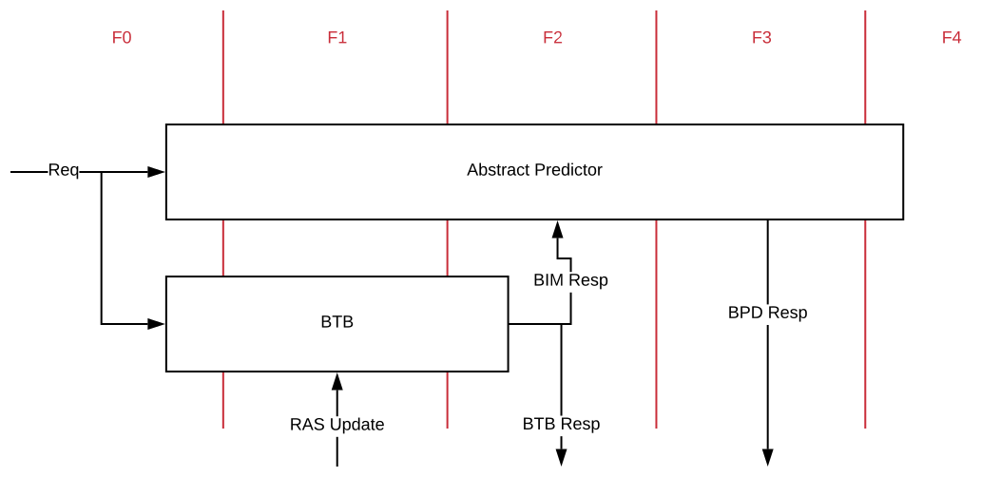
The Branch Predictor Pipeline. Although a simple diagram, this helps show the I/O within the Branch Prediction
Pipeline. The Front-end sends the “next PC” (shown as req) to the pipeline in the F0 stage. Within the “Abstract Predictor”,
hashing is managed by the “Abstract Predictor” wrapper. The “Abstract Predictor” then returns a Backing Predictor (BPD) response
or in other words a prediction for each instruction in the Fetch Packet .
The Abstract Branch Predictor Class¶
To facilitate exploring different global history-based BPD designs, an abstract “BrPredictor” class is provided. It provides a standard interface into the BPD and the control logic for managing the global history register. This abstract class can be found in Fig. 9 labeled “Abstract Predictor”. For a more detailed view of the predictor with an example look at Fig. 12.
Global History¶
As discussed in Managing the Global History Register, global history is a vital
piece of any branch predictor. As such, it is handled by the abstract
BranchPredictor class. Any branch predictor extending the abstract
BranchPredictor class gets access to global history without having to
handle snapshotting, updating, and bypassing.
Operating System-aware Global Histories¶
Although the data on its benefits are preliminary, BOOM does support OS-aware global histories. The normal global history tracks all instructions from all privilege levels. A second user-only global history tracks only user-level instructions.
The Two-bit Counter Tables¶
The basic building block of most branch predictors is the “Two-bit Counter Table” (2BC). As a particular branch is repeatedly taken, the counter saturates upwards to the max value 3 (0b11) or strongly taken. Likewise, repeatedly not-taken branches saturate towards zero (0b00). The high-order bit specifies the prediction and the low-order bit specifies the hysteresis (how “strong” the prediction is).

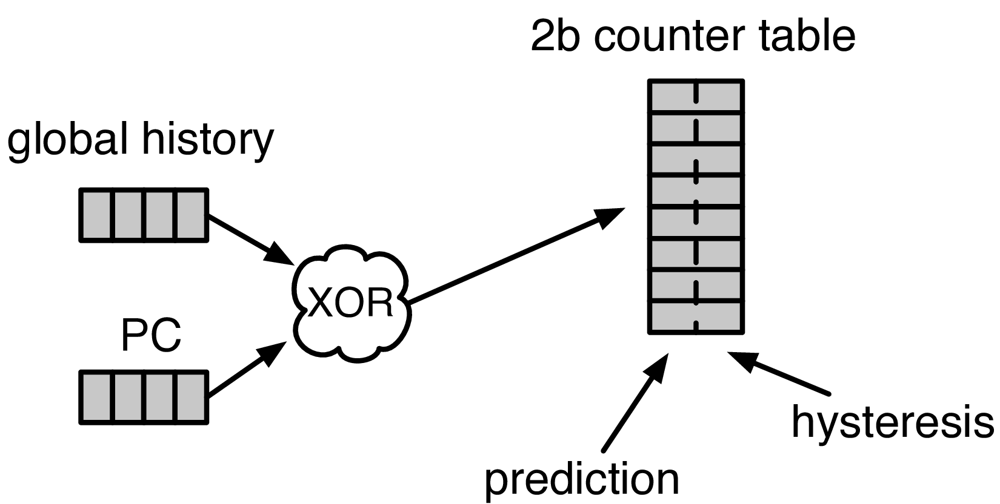
A GShare Predictor uses the global history hashed with the PC to index into a table of 2-bit counters (2BCs). The high-order bit makes the prediction.
These two-bit counters are aggregated into a table. Ideally, a good branch predictor knows which counter to index to make the best prediction. However, to fit these two-bit counters into dense SRAM, a change is made to the 2BC finite state machine – mispredictions made in the weakly not-taken state move the 2BC into the strongly taken state (and vice versa for weakly taken being mispredicted). The FSM behavior is shown in Fig. 11.
Although it’s no longer strictly a “counter”, this change allows us to separate out the read and write requirements on the prediction and hystersis bits and place them in separate sequential memory tables. In hardware, the 2BC table can be implemented as follows:
The P-bit:
- Read - every cycle to make a prediction
- Write - only when a misprediction occurred (the value of the h-bit).
The H-bit:
- Read - only when a misprediction occurred.
- Write - when a branch is resolved (write the direction the branch took).

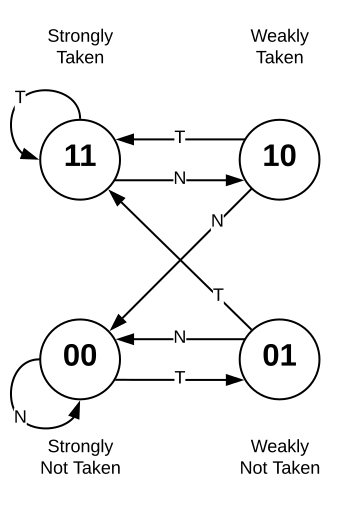
The Two-bit Counter (2BC) State Machine
By breaking the high-order p-bit and the low-order h-bit apart, we can place each in 1 read/1 write SRAM. A few more assumptions can help us do even better. Mispredictions are rare and branch resolutions are not necessarily occurring on every cycle. Also, writes can be delayed or even dropped altogether. Therefore, the h-table can be implemented using a single 1rw-ported SRAM by queueing writes up and draining them when a read is not being performed. Likewise, the p-table can be implemented in 1rw-ported SRAM by banking it – buffer writes and drain when there is not a read conflict.
A final note: SRAMs are not happy with a “tall and skinny” aspect ratio that the 2BC tables require. However, the solution is simple – tall and skinny can be trivially transformed into a rectangular memory structure. The high-order bits of the index can correspond to the SRAM row and the low-order bits can be used to mux out the specific bits from within the row.
The TAGE Predictor¶
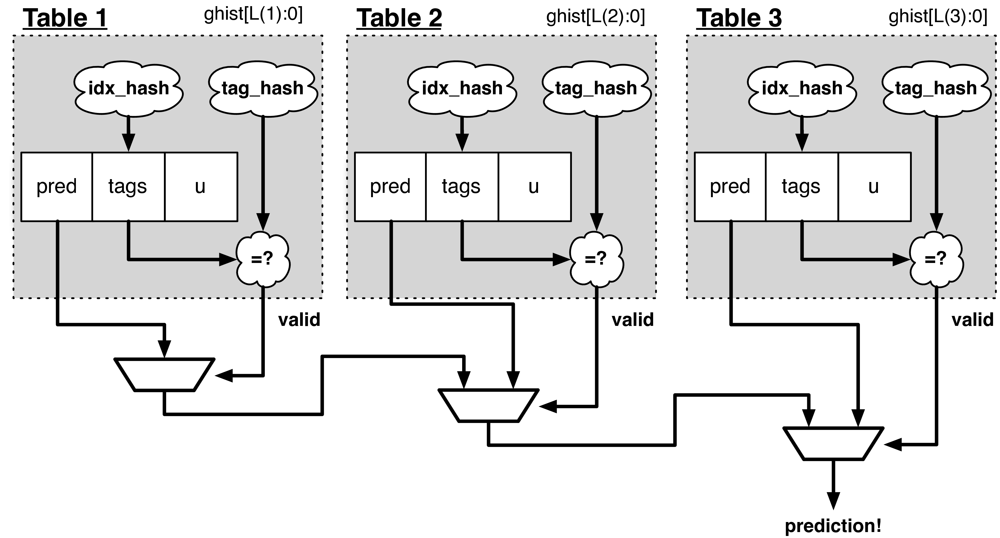
The TAGE predictor. The requesting address (PC) and the global history are fed into each table’s index hash and tag hash. Each table provides its own prediction (or no prediction) and the table with the longest history wins.
BOOM also implements the TAGE conditional branch predictor. TAGE is a highly-parameterizable, state-of-the-art global history predictor. The design is able to maintain a high degree of accuracy while scaling from very small predictor sizes to very large predictor sizes. It is fast to learn short histories while also able to learn very, very long histories (over a thousand branches of history).
TAGE (TAgged GEometric) is implemented as a collection of predictor tables. Each table entry contains a prediction counter, a usefulness counter, and a tag. The prediction counter provides the prediction (and maintains some hysteresis as to how strongly biased the prediction is towards taken or not-taken). The usefulness counter tracks how useful the particular entry has been in the past for providing correct predictions. The tag allows the table to only make a prediction if there is a tag match for the particular requesting instruction address and global history.
Each table has a different (and geometrically increasing) amount of history associated with it. Each table’s history is used to hash with the requesting instruction address to produce an index hash and a tag hash. Each table will make its own prediction (or no prediction, if there is no tag match). The table with the longest history making a prediction wins.
On a misprediction, TAGE attempts to allocate a new entry. It will only overwrite an entry that is “not useful” (ubits == 0).
TAGE Global History and the Circular Shift Registers (CSRs) [15]¶
Each TAGE table has associated with it its own global history (and each table has geometrically more history than the last table). The histories contain many more bits of history that can be used to index a TAGE table; therefore, the history must be “folded” to fit. A table with 1024 entries uses 10 bits to index the table. Therefore, if the table uses 20 bits of global history, the top 10 bits of history are XOR’ed against the bottom 10 bits of history.
Instead of attempting to dynamically fold a very long history register every cycle, the history can be stored in a circular shift register (CSR). The history is stored already folded and only the new history bit and the oldest history bit need to be provided to perform an update. Listing 2 shows an example of how a CSR works.
Example:
A 12 bit value (0b_0111_1001_1111) folded onto a 5 bit CSR becomes
(0b_0_0010), which can be found by:
/-- history[12] (evict bit)
|
c[4], c[3], c[2], c[1], c[0]
| ^
| |
\_______________________/ \---history[0] (newly taken bit)
(c[4] ^ h[ 0] generates the new c[0]).
(c[1] ^ h[12] generates the new c[2]).
Each table must maintain three CSRs. The first CSR is used for
computing the index hash and has a size n=log(num_table_entries). As
a CSR contains the folded history, any periodic history pattern matching
the length of the CSR will XOR to all zeroes (potentially quite common).
For this reason, there are two CSRs for computing the tag hash, one of
width n and the other of width n-1.
For every prediction, all three CSRs (for every table) must be snapshotted and reset if a branch misprediction occurs. Another three commit copies of these CSRs must be maintained to handle pipeline flushes.
Usefulness counters (u-bits)¶
The “usefulness” of an entry is stored in the u-bit counters. Roughly speaking, if an entry provides a correct prediction, the u-bit counter is incremented. If an entry provides an incorrect prediction, the u-bit counter is decremented. When a misprediction occurs, TAGE attempts to allocate a new entry. To prevent overwriting a useful entry, it will only allocate an entry if the existing entry has a usefulness of zero. However, if an entry allocation fails because all of the potential entries are useful, then all of the potential entries are decremented to potentially make room for an allocation in the future.
To prevent TAGE from filling up with only useful but rarely-used entries, TAGE must provide a scheme for “degrading” the u-bits over time. A number of schemes are available. One option is a timer that periodically degrades the u-bit counters. Another option is to track the number of failed allocations (incrementing on a failed allocation and decremented on a successful allocation). Once the counter has saturated, all u-bits are degraded.
TAGE Snapshot State¶
For every prediction, all three CSRs (for every table) must be snapshotted and reset if a branch misprediction occurs. TAGE must also remember the index of each table that was checked for a prediction (so the correct entry for each table can be updated later). Finally, TAGE must remember the tag computed for each table – the tags will be needed later if a new entry is to be allocated. [16]
Other Predictors¶
BOOM provides a number of other predictors that may provide useful.
The Base Only Predictor¶
The Base Only Predictor uses the BTBs BIM to make a prediction on whether the branch was taken or not.
The Null Predictor¶
The Null Predictor is used when no BPD predictor is desired. It will always predict “not taken”.
The Random Predictor¶
The Random Predictor uses an LFSR to randomize both “was a prediction made?” and “which direction each branch in the Fetch Packet should take?”. This is very useful for both torturing-testing BOOM and for providing a worse-case performance baseline for comparing branch predictors.
| [7] | It’s the PC Tag storage and Branch Target storage that makes the BTB within the Next-Line Predictor (NLP) so expensive. |
| [8] | JAL instructions jump to a PC+Immediate location, whereas
JALR instructions jump to a PC+Register[rs1]+Immediate location. |
| [9] | Redirecting the Front-end in the F4 Stage for instructions is trivial, as the instruction can be decoded and its target can be known. |
| [10] | In the data-cache, it can be useful to fetch data from the wrong path - it is possible that future code executions may want to access the data. Worst case, the cache’s effective capacity is reduced. But it can be quite dangerous to add wrong-path information to the Backing Predictor (BPD) - it truly represents a code-path that is never exercised, so the information will never be useful in later code executions. Worst, aliasing is a problem in branch predictors (at most partial tag checks are used) and wrong-path information can create deconstructive aliasing problems that worsens prediction accuracy. Finally, bypassing of the inflight prediction information can occur, eliminating any penalty of not updating the predictor until the Commit stage. |
| [11] | These info packets are not stored in the ROB for two reasons - first, they correspond to Fetch Packet`s, not instructions. Second, they are very expensive and so it is reasonable to size the :term:`Fetch Target Queue (FTQ) to be smaller than the ROB. |
| [12] | Actually, the direction of all conditional branches within a Fetch Packet are compressed (via an OR-reduction) into a single bit, but for this section, it is easier to describe the history register in slightly inaccurate terms. |
| [13] | Notice that there is a delay between beginning to make a prediction in the F0 stage (when the global history is read) and redirecting the Front-end in the F4 stage (when the global history is updated). This results in a “shadow” in which a branch beginning to make a prediction in F0 will not see the branches (or their outcomes) that came a cycle (or two) earlier in the program (that are currently in F1/2/3 stages). It is vitally important though that these “shadow branches” be reflected in the global history snapshot. |
| [14] | An example of a pipeline replay is a memory ordering failure in which a load executed before an older store it depends on and got the wrong data. The only recovery requires flushing the entire pipeline and re-executing the load. |
| [15] | No relation to the Control/Status Registers (CSRs) in RISC-V. |
| [16] | There are ways to mitigate some of these costs, but this margin is too narrow to contain them. |
| [1] | Unfortunately, the terminology in the literature gets a bit muddled here in what to call different types and levels of branch predictor. Literature has references to different structures; “micro-BTB” versus “BTB”, “NLP” versus “BHT”, and “cache-line predictor” versus “overriding predictor”. Although the Rocket core calls its own predictor the “BTB”, BOOM refers to it as the Next-Line Predictor (NLP) , to denote that it is a combinational predictor that provides single-cycle predictions for fetching “the next line”, and the Rocket BTB encompasses far more complexity than just a “branch target buffer” structure. Likewise, the name Backing Predictor (BPD) was chosen to avoid being overly descriptive of the internal design (is it a simple BHT? Is it tagged? Does it override the NLP ?) while being accurate. If you have recommendations for better names, feel free to reach out! |
The Decode Stage¶
The Decode stage takes instructions from the Fetch Buffer, decodes them, and allocates the necessary resources as required by each instruction. The Decode stage will stall as needed if not all resources are available.
RVC Changes¶
RVC decode is performed by expanding RVC instructions using Rocket’s
RVCExpander. This does not change normal functionality of the Decode stage.
The Rename Stage¶
The Rename stage maps the ISA (or logical) register specifiers of each instruction to physical register specifiers.
The Purpose of Renaming¶
Renaming is a technique to rename the ISA (or logical) register specifiers in an instruction by mapping them to a new space of physical registers. The goal to register renaming is to break the output-dependencies (WAW) and anti-dependences (WAR) between instructions, leaving only the true dependences (RAW). Said again, but in architectural terminology, register renaming eliminates write-after-write (WAW) and write-after-read (WAR) hazards, which are artifacts introduced by a) only having a limited number of ISA registers to use as specifiers and b) loops, which by their very nature will use the same register specifiers on every loop iteration.
The Explicit Renaming Design¶
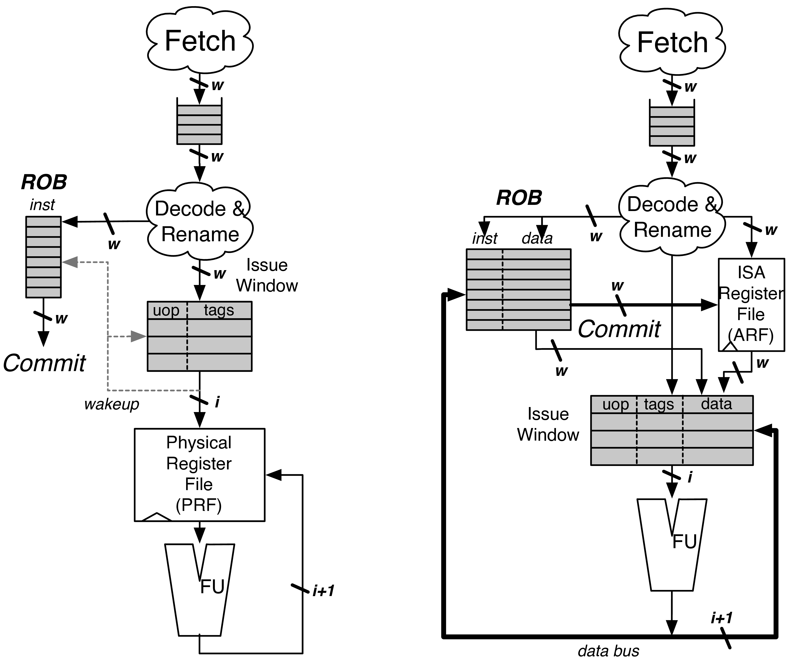
A PRF design (left) and a data-in-ROB design (right)
BOOM is an “explicit renaming” or “physical register file” out-of-order core design. A Physical Register File, containing many more registers than the ISA dictates, holds both the committed architectural register state and speculative register state. The Rename Map Table s contain the information needed to recover the committed state. As instructions are renamed, their register specifiers are explicitly updated to point to physical registers located in the Physical Register File. [1]
This is in contrast to an “implicit renaming” or “data-in-ROB” out-of-order core design. The Architectural Register File (ARF) only holds the committed register state, while the ROB holds the speculative write-back data. On commit, the ROB transfers the speculative data to the ARF[2]_
The Rename Map Table¶
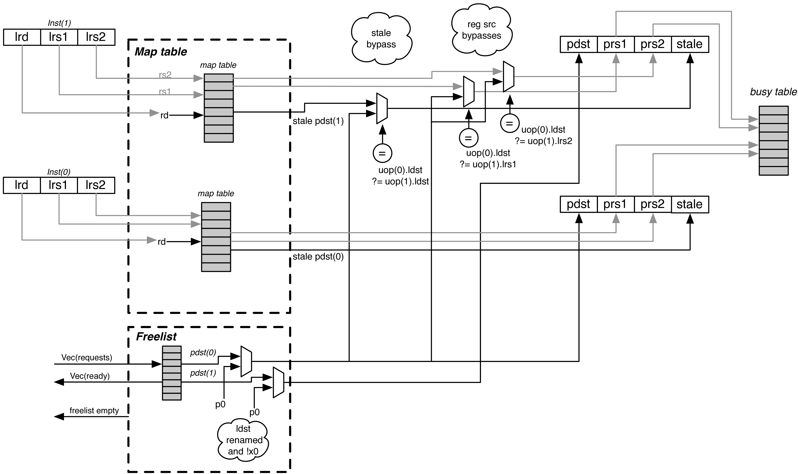
The Rename Stage. Logical register specifiers read the Rename Map Table to get their physical specifier. For superscalar rename, any changes to the Map Tables must be bypassed to dependent instructions. The physical source specifiers can then read the Busy Table. The Stale specifier is used to track which physical register will be freed when the instruction later commits. P0 in the Physical Register File is always 0.
The Rename Map Table (abbreviated as Map Table) holds the speculative mappings from ISA registers to physical registers.
Each branch gets its own copy of the Rename Map Table[3]_ On a branch mispredict, the Rename Map Table can be reset instantly from the mispredicting branch’s copy of the Rename Map Table
As the RV64G ISA uses fixed locations of the register specifiers (and no implicit register specifiers), the Map Table can be read before the instruction is decoded! And hence the Decode and Rename stages can be combined.
Resets on Exceptions and Flushes¶
An additional, optional “Committed Map Table” holds the rename map for the committed architectural state. If enabled, this allows single-cycle reset of the pipeline during flushes and exceptions (the current map table is reset to the Committed Map Table). Otherwise, pipeline flushes require multiple cycles to “unwind” the ROB to write back in the rename state at the commit point, one ROB row per cycle.
The Busy Table¶
The Busy Table tracks the readiness status of each physical register. If all physical operands are ready, the instruction will be ready to be issued.
The Free List¶
The Free List tracks the physical registers that are currently un-used and is used to allocate new physical registers to instructions passing through the Rename stage.
The Free List is implemented as a bit-vector. A priority decoder can then be used to find the first free register. BOOM uses a cascading priority decoder to allocate multiple registers per cycle. [4]
On every branch (or JALR), the Rename Map Tables are snapshotted to allow single-cycle recovery on a branch misprediction. Likewise, the Free List also sets aside a new “Allocation List”, initialized to zero. As new physical registers are allocated, the Allocation List for each branch is updated to track all of the physical registers that have been allocated after the branch. If a misspeculation occurs, its Allocation List is added back to the Free List by OR’ing the branch’s Allocation List with the Free List. [5]
Stale Destination Specifiers¶
For instructions that will write a register, the Map Table is read to get the stale physical destination specifier (“stale pdst”). Once the instruction commits, the stale pdst is returned to the Free List, as no future instructions will read it.
| [1] | The MIPS R10k, Alpha 21264, Intel Sandy Bridge, and ARM Cortex A15 cores are all example of explicit renaming out-of-order cores. |
| [2] | The Pentium 4 and the ARM Cortex A57 are examples of implicit renaming designs. |
| [3] | An alternate design for wider pipelines may prefer to only make up to one snapshot per cycle, but this comes with additional complexity to deduce the precise mappings for any given instruction within the Fetch Packet. |
| [4] | A two-wide Rename stage could use two priority decoders starting from opposite ends. |
| [5] | Conceptually, branches are often described as “snapshotting” the Free List (along with an OR’ing with the current Free List at the time of the misprediction). However, snapshotting fails to account for physical registers that were allocated when the snapshot occurs, then become freed, then becomes re-allocated before the branch mispredict is detected. In this scenario, the physical register gets leaked, as neither the snapshot nor the current Free List know that it had been freed. Eventually, the processor slows as it struggles to maintain enough inflight physical registers, until finally the machine comes to a halt. If this sounds autobiographical because the original author (Chris) may have trusted computer architecture lectures, well… |
The Reorder Buffer (ROB) and the Dispatch Stage¶
The Reorder Buffer (ROB) tracks the state of all inflight instructions in the pipeline. The role of the ROB is to provide the illusion to the programmer that his program executes in-order. After instructions are decoded and renamed, they are then dispatched to the ROB and the Issue Queue and marked as busy. As instructions finish execution, they inform the ROB and are marked not busy. Once the “head” of the ROB is no longer busy, the instruction is committed, and it’s architectural state now visible. If an exception occurs and the excepting instruction is at the head of the ROB, the pipeline is flushed and no architectural changes that occurred after the excepting instruction are made visible. The ROB then redirects the PC to the appropriate exception handler.
The ROB Organization¶
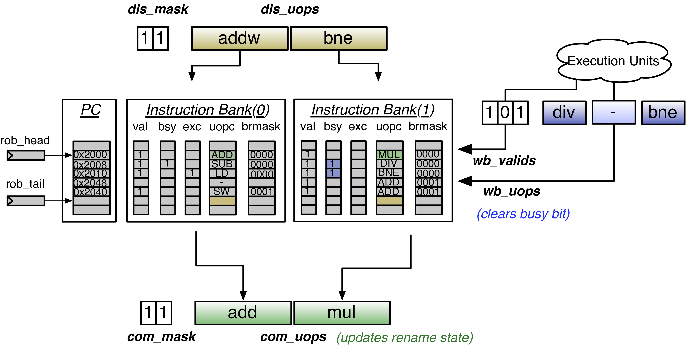
The Reorder Buffer for a two-wide BOOM with three-issue. Dispatched uops (dis uops) are written at the bottom of the ROB (rob tail), while committed uops (com uops) are committed from the top, at rob head, and update the rename state. Uops that finish executing (wb uops) clear their busy bit. Note: the dispatched uops are written into the same ROB row together, and are located consecutively in memory allowing a single PC to represent the entire row.
The ROB is, conceptually, a circular buffer that tracks all inflight instructions in-order. The oldest instruction is pointed to by the commit head, and the newest instruction will be added at the rob tail.
To facilitate superscalar dispatch and commit, the ROB is
implemented as a circular buffer with W banks (where W
is the dispatch and commit width of the machine [1]). This
organization is shown in Fig. 16.
At dispatch, up to W instructions are written from the Fetch Packet
into an ROB row, where each instruction is written to a
different bank across the row. As the instructions within a Fetch Packet
are all consecutive (and aligned) in memory, this allows a
single PC to be associated with the entire Fetch Packet (and the
instruction’s position within the Fetch Packet provides the low-order
bits to its own PC). While this means that branching code will leave
bubbles in the ROB, it makes adding more instructions to the ROB very
cheap as the expensive costs are amortized across each ROB row.
ROB State¶
Each ROB entry contains relatively little state:
- is entry valid?
- is entry busy?
- is entry an exception?
- branch mask (which branches is this entry still speculated under?
- rename state (what is the logical destination and the stale physical destination?)
- floating-point status updates
- other miscellaneous data (e.g., helpful for statistic tracking)
The PC and the branch prediction information is stored on a per-row basis (see PC Storage). The Exception State only tracks the oldest known excepting instruction (see Exception State).
Exception State¶
The ROB tracks the oldest excepting instruction. If this instruction reaches the head of the ROB, then an exception is thrown.
Each ROB entry is marked with a single-bit to signify whether or not the instruction has encountered exceptional behavior, but the additional exception state (e.g., the bad virtual address and the exception cause) is only tracked for the oldest known excepting instruction. This saves considerable state by not storing this on a per entry basis.
PC Storage¶
The ROB must know the PC of every inflight instruction. This information is used in the following situations:
- Any instruction could cause an exception, in which the “exception pc” (epc) must be known.
- Branch and jump instructions need to know their own PC for for target calculation.
- Jump-register instructions must know both their own PC and the PC of the following instruction in the program to verify if the Front-end predicted the correct JR target.
This information is incredibly expensive to store. Instead of passing PCs down the pipeline, branch and jump instructions access the ROB’s “PC File” during the Register-read stage for use in the Branch Unit. Two optimizations are used:
- only a single PC is stored per ROB row.
- the PC File is stored in two banks, allowing a single read-port to read two consecutive entries simultaneously (for use with JR instructions).
The Commit Stage¶
When the instruction at the commit head is no longer busy (and it is not excepting), it may be committed, i.e., its changes to the architectural state of the machine are made visible. For superscalar commit, the entire ROB row is analyzed for not busy instructions (and thus, up to the entire ROB row may be committed in a single cycle). The ROB will greedily commit as many instructions as it can per row to release resource as soon as possible. However, the ROB does not (currently) look across multiple rows to find commit-able instructions.
Only once a store has been committed may it be sent to memory. For superscalar committing of stores, the Load/Store Unit (LSU) is told “how many stores” may be marked as committed. The LSU will then drain the committed stores to memory as it sees fit.
When an instruction (that writes to a register) commits, it then frees the stale physical destination register. The stale pdst is then free to be re-allocated to a new instruction.
Exceptions and Flushes¶
Exceptions are handled when the instruction at the commit head is excepting. The pipeline is then flushed and the ROB emptied. The Rename Map Tables must be reset to represent the true, non-speculative committed state. The Front-end is then directed to the appropriate PC. If it is an architectural exception, the excepting instruction’s PC (referred to as the exception vector) is sent to the Control/Status Register (CSR) file. If it is a micro-architectural exception (e.g., a load/store ordering misspeculation) the failing instruction is refetched and execution can begin anew.
Parameterization - Rollback versus Single-cycle Reset¶
The behavior of resetting the Rename Map Tables is parameterizable. The first option is to rollback the ROB one row per cycle to unwind the rename state (this is the behavior of the MIPS R10k). For each instruction, the stale physical destination register is written back into the Map Table for its logical destination specifier.
A faster single-cycle reset is available. This is accomplished by using another rename snapshot that tracks the committed state of the rename tables. This Committed Map Table is updated as instructions commit. [2]
Causes¶
The RV64G ISA provides relatively few exception sources:
- Load/Store Unit
- page faults
- Branch Unit
- misaligned fetches
- Decode Stage
- all other exceptions and interrupts can be handled before the instruction is dispatched to the ROB
Note that memory ordering speculation errors also originate from the Load/Store Unit, and are treated as exceptions in the BOOM pipeline (actually they only cause a pipeline “retry”).
Point of No Return (PNR)¶
The point-of-no-return head runs ahead of the ROB commit head, marking the next instruction which might be misspeculated or generate an exception. These include unresolved branches and untranslated memory operations. Thus, the instructions ahead of the commit head and behind the PNR head are guaranteed to be non-speculative, even if they have not yet written back.
Currently the PNR is only used for RoCC instructions. RoCC co-processors typically expect their instructions in-order, and do not tolerate misspeculation. Thus we can only issue a instruction to our co-processor when it has past the PNR head, and thus is no longer speculative.
| [1] | This design sets up the dispatch and commit widths of BOOM to be the same. However, that is not necessarily a fundamental constraint, and it would be possible to orthogonalize the dispatch and commit widths, just with more added control complexity. |
| [2] | The tradeoff here is between longer latencies on exceptions versus an increase in area and wiring. |
The Issue Unit¶
The Issue Queue s hold dispatched Micro-Ops (UOPs) that have not yet executed. When all of the operands for the UOP<Micro-Op (UOP) are ready, the issue slot sets its “request” bit high. The issue select logic then chooses to issue a slot which is asserting its “request” signal. Once a UOP<Micro-Op (UOP) is issued, it is removed from the Issue Queue to make room for more dispatched instructions.
BOOM uses a split Issue Queues - instructions of specific types are placed into a unique Issue Queue (integer, floating point, memory).
Speculative Issue¶
Although not yet supported, future designs may choose to speculatively issue UOPs<Micro-Op (UOP) for improved performance (e.g., speculating that a load instruction will hit in the cache and thus issuing dependent UOPs<Micro-Op (UOP) assuming the load data will be available in the bypass network). In such a scenario, the Issue Queue cannot remove speculatively issued UOPs<Micro-Op (UOP) until the speculation has been resolved. If a speculatively-issued UOP<Micro-Op (UOP) failure occurs, then all issued UOPs<Micro-Op (UOP) that fall within the speculated window must be killed and retried from the Issue Queue. More advanced techniques are also available.
Issue Slot¶
Fig. 17 shows a single issue slot from the Issue Queue. [1]
Instructions are dispatched into the Issue Queue. From here, they wait for all of their operands to be ready (“p” stands for presence bit, which marks when an operand is present in the register file).
Once ready, the issue slot will assert its “request” signal, and wait to be issued.
Issue Select Logic¶
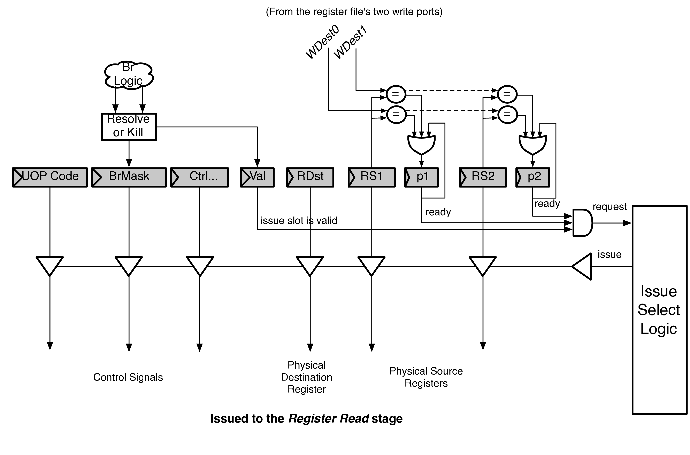
A single issue slot from the Issue Queue.
Each issue select logic port is a static-priority encoder that picks that first available UOP<Micro-Op (UOP) in the Issue Queue. Each port will only schedule a UOP<Micro-Op (UOP) that its port can handle (e.g., floating point UOPs<Micro-Op (UOP) will only be scheduled onto the port governing the Floating Point Unit). This creates a cascading priority encoder for ports that can schedule the same UOPs<Micro-Op (UOP) as each other.
If a Functional Unit is unavailable, it de-asserts its available signal and instructions will not be issued to it (e.g., an un-pipelined divider).
Un-ordered Issue Queue¶
There are two scheduling policies available in BOOM.
The first is a MIPS R10K-style Un-ordered Issue Queue. Dispatching instructions are placed into the first available Issue Queue slot and remain there until they are issued. This can lead to pathologically poor performance, particularly in scenarios where unpredictable branches are placed into the lower priority slots and are unable to be issued until the ROB fills up and the Issue Window starts to drain. Because instructions following branches are only implicitly dependent on the branch, there is no other forcing function that enables the branches to issue earlier, except the filling of the ROB.
Age-ordered Issue Queue¶
The second available policy is an Age-ordered Issue Queue. Dispatched instructions are placed into the bottom of the Issue Queue (at lowest priority). Every cycle, every instruction is shifted upwards (the Issue queue is a “collapsing queue”). Thus, the oldest instructions will have the highest issue priority. While this increases performance by scheduling older branches and older loads as soon as possible, it comes with a potential energy penalty as potentially every Issue Queue slot is being read and written to on every cycle.
Wake-up¶
There are two types of wake-up in BOOM - fast wakeup and slow wakeup (also called a long latency wakeup). Because ALU UOPs<Micro-Op (UOP) can send their write-back data through the bypass network, issued ALU UOPs<Micro-Op (UOP) will broadcast their wakeup to the Issue Queue as they are issued.
However, floating-point operations, loads, and variable latency operations are not sent through the bypass network, and instead the wakeup signal comes from the register file ports during the write-back stage.
| [1] | Conceptually, a bus is shown for implementing the driving of the signals sent to the Register Read Stage. In reality BOOM actually uses muxes. |
The Register Files and Bypass Network¶
An example multi-issue pipeline. The integer register file needs 6 read ports and 3 write ports for the execution units present. The FP register file needs 3 read ports and 2 write ports. FP and memory operations share a long latency write port to both the integer and FP register file. To make scheduling of the write port trivial, the ALU’s pipeline is lengthened to match the FPU latency. The ALU is able to bypass from any of these stages to dependent instructions in the Register Read stage.
BOOM is a unified, Physical Register File (PRF) design. The register files hold both the committed and speculative state. Additionally, there are two register files: one for integer and one for floating point register values. The Rename Map Tables track which physical register corresponds to which ISA register.
BOOM uses the Berkeley hardfloat floating point units which use an internal 65-bit operand format (https://github.com/ucb-bar/berkeley-hardfloat). Therefore, all physical floating point registers are 65-bits.
Register Read¶
The register file statically provisions all of the register read ports required to satisfy all issued instructions. For example, if issue port #0 corresponds to an integer ALU and issue port #1 corresponds to memory unit, then the first two register read ports will statically serve the ALU and the next two register read ports will service the memory unit for four total read ports.
Dynamic Read Port Scheduling¶
Future designs can improve area-efficiency by provisioning fewer register read ports and using dynamically scheduling to arbitrate for them. This is particularly helpful as most instructions need only one operand. However, it does add extra complexity to the design, which is often manifested as extra pipeline stages to arbitrate and detect structural hazards. It also requires the ability to kill issued Micro-Ops (UOPs)<Micro-Op (UOP) and re-issue them from the Issue Queue on a later cycle.
Bypass Network¶
ALU operations can be issued back-to-back by having the write-back values forwarded through the Bypass Network. Bypassing occurs at the end of the Register Read stage.
The Execute Pipeline¶
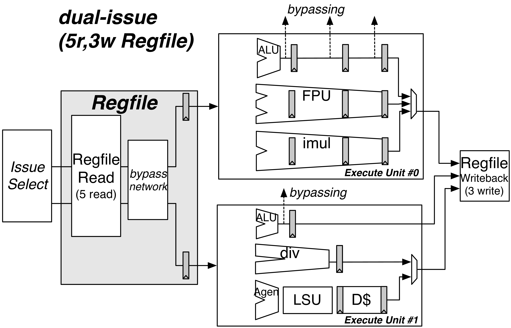
An example pipeline for a dual-issue BOOM. The first issue port schedules UOP<Micro-Op (UOP)`s onto Execute Unit #0, which can accept ALU operations, FPU operations, and integer multiply instructions. The second issue port schedules ALU operations, integer divide instructions (unpipelined), and load/store operations. The ALU operations can bypass to dependent instructions. Note that the ALU in Execution Unit #0 is padded with pipeline registers to match latencies with the FPU and iMul units to make scheduling for the write-port trivial. Each :term:`Execution Unit has a single issue-port dedicated to it but contains within it a number of lower-level :term:`Functional Unit`s.
The Execution Pipeline covers the execution and write-back of Micro-Ops (UOPs). Although the UOPs<Micro-Op (UOP) will travel down the pipeline one after the other (in the order they have been issued), the UOPs<Micro-Op (UOP) themselves are likely to have been issued to the Execution Pipeline out-of-order. Fig. 19 shows an example Execution Pipeline for a dual-issue BOOM.
Execution Units¶
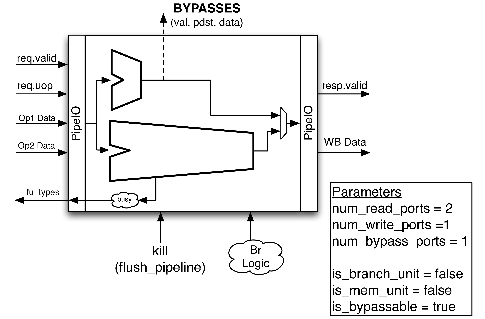
An example Execution Unit. This particular example shows an integer ALU (that can bypass results to dependent instructions) and an unpipelined divider that becomes busy during operation. Both Functional Unit`s share a single write-port. The :term:`Execution Unit accepts both kill signals and branch resolution signals and passes them to the internal Functional Unit s as required.
An Execution Unit is a module that a single issue port will schedule UOPs<Micro-Op (UOP) onto and contains some mix of Functional Unit s. Phrased in another way, each issue port from the Issue Queue talks to one and only one Execution Unit. An Execution Unit may contain just a single simple integer ALU, or it could contain a full complement of floating point units, a integer ALU, and an integer multiply unit.
The purpose of the Execution Unit is to provide a flexible abstraction which gives a lot of control over what kind of Execution Unit s the architect can add to their pipeline
Scheduling Readiness¶
An Execution Unit provides a bit-vector of the Functional Unit s it has available to the issue scheduler. The issue scheduler will only schedule UOPs<Micro-Op (UOP) that the Execution Unit supports. For Functional Unit s that may not always be ready (e.g., an un-pipelined divider), the appropriate bit in the bit-vector will be disabled (See Fig. 19).
Functional Unit¶
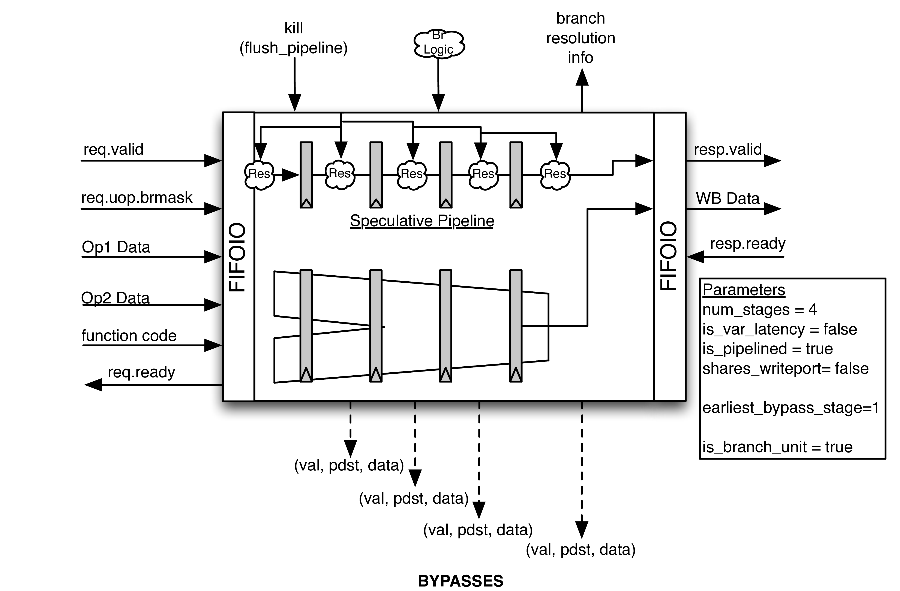
The abstract Pipelined Functional Unit class. An expert-written, low-level Functional Unit is instantiated within the Functional Unit. The request and response ports are abstracted and bypass and branch speculation support is provided. UOPs<Micro-Op (UOP) are individually killed by gating off their response as they exit the low-level Functional Unit .
Functional Unit s are the muscle of the CPU, computing the necessary operations as required by the instructions. Functional Unit s typically require a knowledgable domain expert to implement them correctly and efficiently.
For this reason, BOOM uses an abstract Functional Unit class to “wrap” expert-written, low-level Functional Unit s from the Rocket repository (see Rocket Chip SoC Generator). However, the expert-written Functional Unit s created for the Rocket in-order processor make assumptions about in-order issue and commit points (namely, that once an instruction has been dispatched to them it will never need to be killed). These assumptions break down for BOOM.
However, instead of re-writing or forking the Functional Unit s, BOOM provides an abstract Functional Unit class (see Fig. 21) that “wraps” the lower-level functional units with the parameterized auto-generated support code needed to make them work within BOOM. The request and response ports are abstracted, allowing Functional Unit s to provide a unified, interchangeable interface.
Pipelined Functional Units¶
A pipelined Functional Unit can accept a new UOP<Micro-Op (UOP) every cycle. Each UOP<Micro-Op (UOP) will take a known, fixed latency.
Speculation support is provided by auto-generating a pipeline that passes down the UOP<Micro-Op (UOP) meta-data and branch mask in parallel with the UOP<Micro-Op (UOP) within the expert-written Functional Unit . If a UOP<Micro-Op (UOP) is misspeculated, it’s response is de-asserted as it exits the functional unit.
An example pipelined Functional Unit is shown in Fig. 21.
Un-pipelined Functional Units¶
Un-pipelined Functional Unit s (e.g., a divider) take an variable (and unknown) number of cycles to complete a single operation. Once occupied, they de-assert their ready signal and no additional UOPs<Micro-Op (UOP) may be scheduled to them.
Speculation support is provided by tracking the branch mask of the UOP<Micro-Op (UOP) in the Functional Unit.
The only requirement of the expert-written un-pipelined Functional Unit is to provide a kill signal to quickly remove misspeculated UOPs<Micro-Op (UOP). [1]
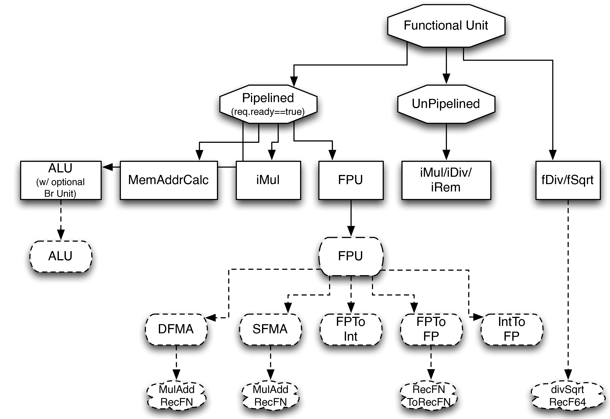
The dashed ovals are the low-level Functional Unit s written by experts, the squares are
concrete classes that instantiate the low-level Functional Unit s, and the octagons are abstract classes that
provide generic speculation support and interfacing with the BOOM pipeline. The floating point divide
and squart-root unit doesn’t cleanly fit either the Pipelined nor Unpipelined abstract class, and so directly
inherits from the FunctionalUnit super class.
Branch Unit & Branch Speculation¶
The Branch Unit handles the resolution of all branch and jump instructions.
All UOPs<Micro-Op (UOP) that are “inflight” in the pipeline (have an allocated ROB entry) are given a branch mask, where each bit in the branch mask corresponds to an un-executed, inflight branch that the UOP<Micro-Op (UOP) is speculated under. Each branch in Decode is allocated a branch tag, and all following UOPs<Micro-Op (UOP) will have the corresponding bit in the branch mask set (until the branch is resolved by the Branch Unit).
If the branches (or jumps) have been correctly speculated by the Front-end, then the Branch Unit s only action is to broadcast the corresponding branch tag to all inflight UOPs<Micro-Op (UOP) that the branch has been resolved correctly. Each UOP<Micro-Op (UOP) can then clear the corresponding bit in its branch mask, and that branch tag can then be allocated to a new branch in the Decode stage.
If a branch (or jump) is misspeculated, the Branch Unit must redirect the PC to the correct target, kill the Front-end and Fetch Buffer, and broadcast the misspeculated branch tag so that all dependent, inflight UOPs<Micro-Op (UOP) may be killed. The PC redirect signal goes out immediately, to decrease the misprediction penalty. However, the kill signal is delayed a cycle for critical path reasons.
The Front-end must pass down the pipeline the appropriate branch speculation meta-data, so that the correct direction can be reconciled with the prediction. Jump Register instructions are evaluated by comparing the correct target with the PC of the next instruction in the ROB (if not available, then a misprediction is assumed). Jumps are evaluated and handled in the Front-end (as their direction and target are both known once the instruction can be decoded).
BOOM (currently) only supports having one Branch Unit .
Load/Store Unit¶
The Load/Store Unit (LSU) handles the execution of load, store, atomic, and fence operations.
BOOM (currently) only supports having one LSU (and thus can only send one load or store per cycle to memory). [2]
See The Load/Store Unit (LSU) for more details on the LSU.
Floating Point Units¶

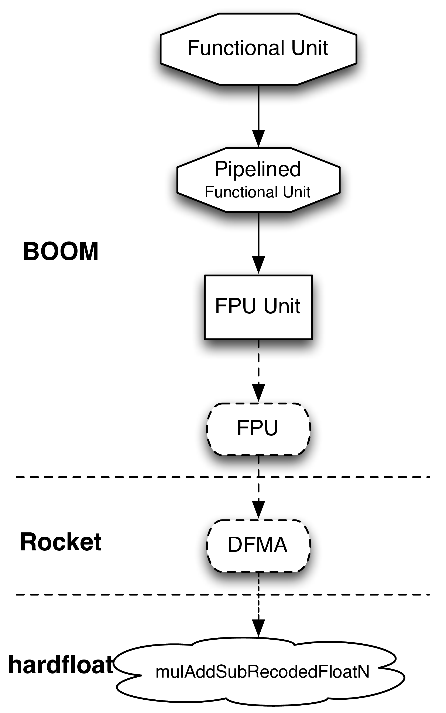
The class hierarchy of the FPU is shown. The expert-written code is contained within the hardfloat and rocket repositories. The “FPU” class instantiates the Rocket components, which itself is further wrapped by the abstract Functional Unit classes (which provides the out-of-order speculation support).
The low-level floating point units used by BOOM come from the Rocket processor (https://github.com/chipsalliance/rocket-chip) and hardfloat (https://github.com/ucb-bar/berkeley-hardfloat) repositories. Figure Fig. 23 shows the class hierarchy of the FPU.
To make the scheduling of the write-port trivial, all of the pipelined FP units are padded to have the same latency. [3]
Floating Point Divide and Square-root Unit¶
BOOM fully supports floating point divide and square-root operations using a single FDiv/Sqrt (or fdiv for short). BOOM accomplishes this by instantiating a double-precision unit from the hardfloat repository. The unit comes with the following features/constraints:
- expects 65-bit recoded double-precision inputs
- provides a 65-bit recoded double-precision output
- can execute a divide operation and a square-root operation simultaneously
- operations are unpipelined and take an unknown, variable latency
- provides an unstable FIFO interface
Single-precision operations have their operands upscaled to double-precision (and then the output downscaled). [4]
Although the unit is unpipelined, it does not fit cleanly into the
Pipelined/Unpipelined abstraction used by the other Functional Unit s
(see Fig. 22). This is because the unit provides
an unstable FIFO interface: although the unit may provide a ready
signal on Cycle i, there is no guarantee that it will continue
to be ready on Cycle i+1, even if no operations are enqueued.
This proves to be a challenge, as the Issue Queue may attempt to issue
an instruction but cannot be certain the unit will accept it once it
reaches the unit on a later cycle.
The solution is to add extra buffering within the unit to hold instructions until they can be released directly into the unit. If the buffering of the unit fills up, back pressure can be safely applied to the Issue Queue. [5]
Parameterization¶
BOOM provides flexibility in specifying the issue width and the mix of
Functional Unit s in the execution pipeline. See src/main/scala/exu/execution-units.scala
for a detailed view on how to instantiate the execution pipeline in BOOM.
Additional parameterization, regarding things like the latency of the FP
units can be found within the configuration settings (src/main/common/config-mixins.scala).
Control/Status Register Instructions¶
A set of Control/Status Register (CSR) instructions allow the atomic read and write of the Control/Status Registers. These architectural registers are separate from the integer and floating registers, and include the cycle count, retired instruction count, status, exception PC, and exception vector registers (and many more!). Each CSR has its own required privilege levels to read and write to it and some have their own side-effects upon reading (or writing).
BOOM (currently) does not rename any of the CSRs, and in addition to the potential side-effects caused by reading or writing a CSR, BOOM will only execute a CSR instruction non-speculatively. [6] This is accomplished by marking the CSR instruction as a “unique” (or “serializing”) instruction - the ROB must be empty before it may proceed to the Issue Queue (and no instruction may follow it until it has finished execution and been committed by the ROB). It is then issued by the Issue Queue, reads the appropriate operands from the Physical Register File, and is then sent to the CSRFile. [7] The CSR instruction executes in the CSRFile and then writes back data as required to the Physical Register File. The CSRFile may also emit a PC redirect and/or an exception as part of executing a CSR instruction (e.g., a syscall).
The Rocket Custom Co-Processor Interface (RoCC)¶
The RoCC interface accepts a RoCC command and up to two register inputs
from the Control Processor’s scalar register file. The RoCC command is
actually the entire RISC-V instruction fetched by the Control Processor
(a “RoCC instruction”). Thus, each RoCC queue entry is at least
2\*XPRLEN + 32 bits in size (additional RoCC instructions may use the
longer instruction formats to encode additional behaviors).
As BOOM does not store the instruction bits in the ROB, a separate data structure (A “RoCC Shim”) holds the instructions until the RoCC instruction can be committed and the RoCC command sent to the co-processor.
The source operands will also require access to BOOM’s register file. RoCC instructions are dispatched to the Issue Window, and scheduled so that they may access the read ports of the register file once the operands are available. The operands are then written into the RoCC Shim, which stores the operands and the instruction bits until they can be sent to the co-processor. This requires significant state.
After issue to RoCC, we track a queue of in-flight RoCC instructions, since we need to translate the logical destination register identifier from the RoCC response into the previously renamed physical destination register identifier.
Currently the RoCC interface does not support interrupts, exceptions, reusing the BOOM FPU, or direct access to the L1 data cache. This should all be straightforward to add, and will be completed as demand arises.
| [1] | This constraint could be relaxed by waiting for the un-pipelined unit to finish before de-asserting its busy signal and suppressing the valid output signal. |
| [2] | Relaxing this constraint could be achieved by allowing multiple LSUs to talk to their own bank(s) of the data-cache, but the added complexity comes in allocating entries in the LSU before knowing the address, and thus which bank, a particular memory operation pertains to. |
| [3] | Rocket instead handles write-port scheduling by killing and refetching the offending instruction (and all instructions behind it) if there is a write-port hazard detected. This would be far more heavy-handed to do in BOOM. |
| [4] | It is cheaper to perform the SP-DP conversions than it is to instantiate a single-precision fdivSqrt unit. |
| [5] | It is this ability to hold multiple inflight instructions within the unit simultaneously that breaks the “only one instruction at a time” assumption required by the UnpipelinedFunctionalUnit abstract class. |
| [6] | There is a lot of room to play with regarding the CSRs. For example, it is probably a good idea to rename the register (dedicated for use by the supervisor) as it may see a lot of use in some kernel code and it causes no side-effects. |
| [7] | The CSRFile is a Rocket component. |
The Load/Store Unit (LSU)¶
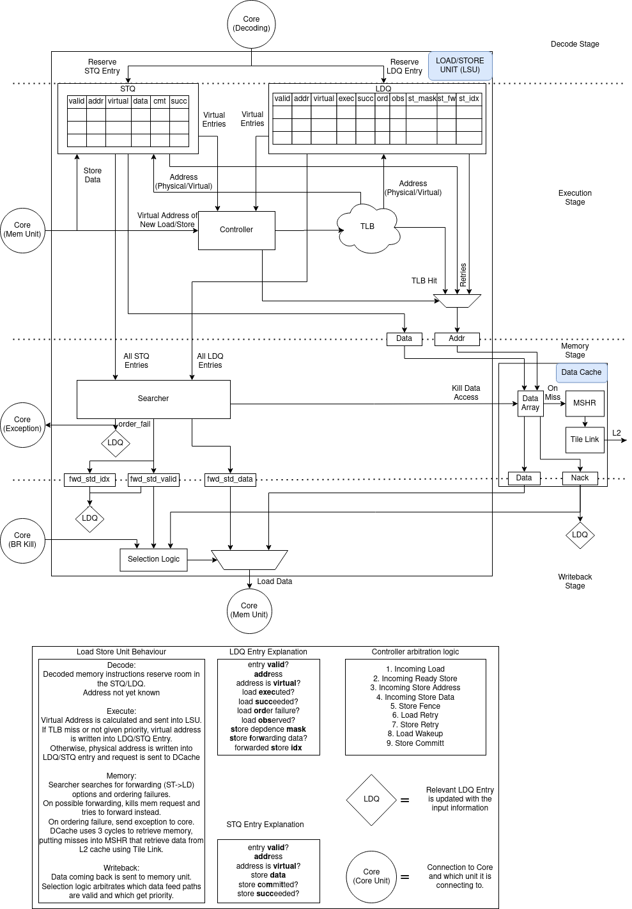
The Load/Store Unit
The Load/Store Unit (LSU) is responsible for deciding when to fire memory operations to the memory system. There are two queues: the Load Queue (LDQ), and the Store Queue (STQ). Load instructions generate a “uopLD” Micro-Op (UOP). When issued, “uopLD” calculates the load address and places its result in the LDQ. Store instructions (may) generate two UOP s, “uopSTA” (Store Address Generation) and “uopSTD” (Store Data Generation). The STA UOP calculates the store address and updates the address in the STQ entry. The STD UOP moves the store data into the STQ entry. Each of these UOP s will issue out of the Issue Window as soon their operands are ready. See Store Micro-Ops for more details on the store UOP specifics.
Store Instructions¶
Entries in the Store Queue are allocated in the Decode stage ( stq(i).valid is set). A “valid” bit denotes when an entry in the STQ holds a valid address and valid data (stq(i).bits.addr.valid and stq(i).bits.data.valid). Once a store instruction is committed, the corresponding entry in the Store Queue is marked as committed. The store is then free to be fired to the memory system at its convenience. Stores are fired to the memory in program order.
Store Micro-Ops¶
Stores are inserted into the issue window as a single instruction (as opposed to being broken up into separate addr-gen and data-gen UOP s). This prevents wasteful usage of the expensive issue window entries and extra contention on the issue ports to the LSU. A store in which both operands are ready can be issued to the LSU as a single UOP which provides both the address and the data to the LSU. While this requires store instructions to have access to two register file read ports, this is motivated by a desire to not cut performance in half on store-heavy code. Sequences involving stores to the stack should operate at IPC=1!
However, it is common for store addresses to be known well in advance of the store data. Store addresses should be moved to the STQ as soon as possible to allow later loads to avoid any memory ordering failures. Thus, the issue window will emit uopSTA or uopSTD UOP s as required, but retain the remaining half of the store until the second operand is ready.
Load Instructions¶
Entries in the Load Queue (LDQ) are allocated in the Decode stage
(ldq(i).valid). In Decode, each load entry is also given a store
mask (ldq(i).bits.st\_dep\_mask), which marks which stores in the Store
Queue the given load depends on. When a store is fired to memory and
leaves the Store Queue, the appropriate bit in the store mask is cleared.
Once a load address has been computed and placed in the LDQ, the
corresponding valid bit is set (ldq(i).addr.valid).
Loads are optimistically fired to memory on arrival to the LSU (getting loads fired early is a huge benefit of out–of–order pipelines). Simultaneously, the load instruction compares its address with all of the store addresses that it depends on. If there is a match, the memory request is killed. If the corresponding store data is present, then the store data is forwarded to the load and the load marks itself as having succeeded. If the store data is not present, then the load goes to sleep. Loads that have been put to sleep are retried at a later time. [1]
The BOOM Memory Model¶
BOOM follows the RVWMO memory consistency model.
BOOM currently exhibits the following behavior:
- Write -> Read constraint is relaxed (newer loads may execute before older stores).
- Read -> Read constraint is maintained (loads to the same address appear in order).
- A thread can read its own writes early.
Ordering Loads to the Same Address¶
The RISC-V WMO memory model requires that loads to the same address be ordered. [2] This requires loads to search against other loads for potential address conflicts. If a younger load executes before an older load with a matching address, the younger load must be replayed and the instructions after it in the pipeline flushed. However, this scenario is only required if a cache coherence probe event snooped the core’s memory, exposing the reordering to the other threads. If no probe events occurred, the load re-ordering may safely occur.
Memory Ordering Failures¶
The Load/Store Unit has to be careful regarding store -> load dependences. For the best performance, loads need to be fired to memory as soon as possible.
sw x1 -> 0(x2)
ld x3 <- 0(x4)
However, if x2 and x4 reference the same memory address, then the load in our example depends on the earlier store. If the load issues to memory before the store has been issued, the load will read the wrong value from memory, and a memory ordering failure has occurred. On an ordering failure, the pipeline must be flushed and the Rename Map Tables reset. This is an incredibly expensive operation.
To discover ordering failures, when a store commits, it checks the entire LDQ for any address matches. If there is a match, the store checks to see if the load has executed, and if it got its data from memory or if the data was forwarded from an older store. In either case, a memory ordering failure has occurred.
See Fig. 24 for more information about the Load/Store Unit.
| [1] | Higher-performance processors will track why a load was put to sleep and wake it up once the blocking cause has been alleviated. |
| [2] | Technically, a fence.r.r could be used to provide the correct execution of software on machines that reorder dependent loads. However, there are two reasons for an ISA to disallow re-ordering of dependent loads: 1) no other popular ISA allows this relaxation, and thus porting software to RISC-V could face extra challenges, and 2) cautious software may be too liberal with the appropriate fence instructions causing a slow-down in software. Thankfully, enforcing ordered dependent loads may not actually be very expensive. For one, load addresses are likely to be known early - and are probably likely to execute in-order anyways. Second, misordered loads are only a problem in the cache of a cache coherence probe, so performance penalty is likely to be negligible. The hardware cost is also negligible - loads can use the same CAM search port on the LAQ that stores must already use. While this may become an issue when supporting one load and one store address calculation per cycle, the extra CAM search port can either be mitigated via banking or will be small compared to the other hardware costs required to support more cache bandwidth. |
The Memory System¶
Note
This section is out-of-date as of 8/26/19 due to a new DCache implementation.
BOOM uses the Rocket Chip non-blocking cache (“Hellacache”). Designed for use
in in-order processors, a “shim” is used to connect BOOM to the
data cache. The source code for the cache can be found in
nbdcache.scala in the Rocket Chip repository <https://github.com/chipsalliance/rocket-chip>.
The contract with the cache is that it may execute all memory operations
sent to it (barring structural hazards). As BOOM will send speculative
load instructions to the cache, the shim (dcacheshim.scala) must
track all “inflight load requests” and their status. If an inflight load
is discovered to be misspeculated, it is marked as such in the shim.
Upon return from the data cache, the load’s response to the pipeline is
suppressed and it is removed from the inflight load queue.
The Hellacache does not ack store requests; the absence of a nack is used to signal a success.
All memory requests to the Hellacache may be killed the cycle after issuing the request (while the request is accessing the data arrays).
The current data cache design accesses the SRAMs in a single-cycle.
The cache has a three-stage pipeline and can accept a new request every cycle. The stages do the following:
- S0: Send request address
- S1: Access SRAM
- S2: Perform way-select and format response data
The data cache is also cache coherent which is helpful even in uniprocessor configurations for allowing a host machine or debugger to read BOOM’s memory.
Parameterization¶
General Parameters¶
Listing general-boom-params lists the top-level parameters that you can manipulate for a BOOM core.
This is taken from src/main/scala/common/parameters.scala.
fetchWidth: Int = 1,
decodeWidth: Int = 1,
numRobEntries: Int = 64,
issueParams: Seq[IssueParams] = Seq(
IssueParams(issueWidth=1, numEntries=16, iqType=IQT_MEM.litValue, dispatchWidth=1),
IssueParams(issueWidth=2, numEntries=16, iqType=IQT_INT.litValue, dispatchWidth=1),
IssueParams(issueWidth=1, numEntries=16, iqType=IQT_FP.litValue , dispatchWidth=1)),
numLdqEntries: Int = 16,
numStqEntries: Int = 16,
numIntPhysRegisters: Int = 96,
numFpPhysRegisters: Int = 64,
maxBrCount: Int = 4,
numFetchBufferEntries: Int = 16,
enableAgePriorityIssue: Boolean = true,
enablePrefetching: Boolean = false,
enableFastLoadUse: Boolean = true,
enableCommitMapTable: Boolean = false,
enableFastPNR: Boolean = false,
enableSFBOpt: Boolean = false,
enableGHistStallRepair: Boolean = true,
enableBTBFastRepair: Boolean = true,
useAtomicsOnlyForIO: Boolean = false,
ftq: FtqParameters = FtqParameters(),
intToFpLatency: Int = 2,
imulLatency: Int = 3,
nPerfCounters: Int = 0,
numRXQEntries: Int = 4,
numRCQEntries: Int = 8,
numDCacheBanks: Int = 1,
nPMPs: Int = 8,
enableICacheDelay: Boolean = false,
/* branch prediction */
enableBranchPrediction: Boolean = true,
branchPredictor: Function2[BranchPredictionBankResponse, Parameters, Tuple2[Seq[BranchPredictorBank], BranchPredictionBankResponse]] = ((resp_in: BranchPredictionBankResponse, p: Parameters) => (Nil, resp_in)),
globalHistoryLength: Int = 64,
localHistoryLength: Int = 32,
localHistoryNSets: Int = 128,
bpdMaxMetaLength: Int = 120,
numRasEntries: Int = 32,
enableRasTopRepair: Boolean = true,
/* more stuff */
useCompressed: Boolean = true,
useFetchMonitor: Boolean = true,
bootFreqHz: BigInt = 0,
fpu: Option[FPUParams] = Some(FPUParams(sfmaLatency=4, dfmaLatency=4)),
usingFPU: Boolean = true,
haveBasicCounters: Boolean = true,
misaWritable: Boolean = false,
mtvecInit: Option[BigInt] = Some(BigInt(0)),
mtvecWritable: Boolean = true,
haveCFlush: Boolean = false,
mulDiv: Option[freechips.rocketchip.rocket.MulDivParams] = Some(MulDivParams(divEarlyOut=true)),
nBreakpoints: Int = 0, // TODO Fix with better frontend breakpoint unit
nL2TLBEntries: Int = 512,
nL2TLBWays: Int = 1,
nLocalInterrupts: Int = 0,
useNMI: Boolean = false,
useAtomics: Boolean = true,
useDebug: Boolean = true,
useUser: Boolean = true,
useSupervisor: Boolean = false,
useVM: Boolean = true,
useSCIE: Boolean = false,
useRVE: Boolean = false,
useBPWatch: Boolean = false,
clockGate: Boolean = false,
mcontextWidth: Int = 0,
scontextWidth: Int = 0,
/* debug stuff */
enableCommitLogPrintf: Boolean = false,
enableBranchPrintf: Boolean = false,
enableMemtracePrintf: Boolean = false
Sample Configurations¶
Sample configurations of the core and the parameters used can be seen in src/main/scala/common/config-mixins.scala.
The following code shows an example of the “Large BOOM Configuration”.
/**
* 3-wide BOOM. Try to match the Cortex-A15.
*/
class WithNLargeBooms(n: Int = 1, overrideIdOffset: Option[Int] = None) extends Config(
new WithTAGELBPD ++ // Default to TAGE-L BPD
new Config((site, here, up) => {
case TilesLocated(InSubsystem) => {
val prev = up(TilesLocated(InSubsystem), site)
val idOffset = overrideIdOffset.getOrElse(prev.size)
(0 until n).map { i =>
BoomTileAttachParams(
tileParams = BoomTileParams(
core = BoomCoreParams(
fetchWidth = 8,
decodeWidth = 3,
numRobEntries = 96,
issueParams = Seq(
IssueParams(issueWidth=1, numEntries=16, iqType=IQT_MEM.litValue, dispatchWidth=3),
IssueParams(issueWidth=3, numEntries=32, iqType=IQT_INT.litValue, dispatchWidth=3),
IssueParams(issueWidth=1, numEntries=24, iqType=IQT_FP.litValue , dispatchWidth=3)),
numIntPhysRegisters = 100,
numFpPhysRegisters = 96,
numLdqEntries = 24,
numStqEntries = 24,
maxBrCount = 16,
numFetchBufferEntries = 24,
ftq = FtqParameters(nEntries=32),
fpu = Some(freechips.rocketchip.tile.FPUParams(sfmaLatency=4, dfmaLatency=4, divSqrt=true))
),
dcache = Some(
DCacheParams(rowBits = site(SystemBusKey).beatBits, nSets=64, nWays=8, nMSHRs=4, nTLBWays=16)
),
icache = Some(
ICacheParams(rowBits = site(SystemBusKey).beatBits, nSets=64, nWays=8, fetchBytes=4*4)
),
hartId = i + idOffset
),
crossingParams = RocketCrossingParams()
)
} ++ prev
}
case SystemBusKey => up(SystemBusKey, site).copy(beatBytes = 16)
case XLen => 64
})
)
Other Parameters¶
You can also manipulate other parameters such as Rocket Chip SoC parameters, Uncore, BTB, BIM, BPU, and more when configuring the SoC! However, this is done in the top-level project that adds BOOM so this will not be discussed here.
The BOOM Development Ecosystem¶
The BOOM Repository¶
The BOOM repository holds the source code to the BOOM core; it is not a full processor and thus is NOT A SELF-RUNNING repository. To instantiate a BOOM core, you must use a top-level project to integrate the core into an SoC. For this purpose you can use the Chipyard Template.
The BOOM core source code can be found in src/main/scala.
The core code structure is shown below:
src/main/scala/bpu/- branch predictor unitcommon/- configs fragments, constants, bundles, tile definitionsexu/- execute/core unitifu/- instruction fetch unitlsu/- load/store/memory unitutil/- utilities
Scala, Chisel, Generators, Configs, Oh My!¶
Working with BOOM has a large learning curve for those people new to Chisel and the BOOM ecosystem. To be productive, it takes time to learn about the micro-architecture, Rocket chip components, Chisel (maybe Firrtl), Scala, and the build system. Luckily, the micro-architecture is detailed in this documentation and some of the other topics (Chisel, Firrtl, Scala) are discussed in their respective websites. Instead of focusing solely on those topics, this section hopes to show how they all fit together by giving a high level of the entire build process. Put in more specific terms: How do you get from Scala/Chisel to Verilog? [1]
Recap on Coding in Scala/Chisel¶
When making changes to BOOM, you are working in Scala/Chisel code.
Chisel is the language embedded inside of Scala to create RTL.
One way to view Scala/Chisel is that Chisel is a set of libraries that are used in Scala that help hardware designers create highly parameterizable RTL.
For example, if you want to make a hardware queue, you would use something like Chisel’s chisel3.util.Queue to make a queue.
However, if you want to change the amount of entries of the queue based on some variable, that would be Scala code.
Another way to think of the distinction between the two languages is that Chisel code will make a circuit in hardware while Scala code will change the parameters of the circuit that Chisel will create.
A simple example is shown below in Listing 3.
var Q_DEPTH = 1 // Scala variable
if (WANT_HUGE_QUEUE == true) {
Q_DEPTH = 123456789 // Big number!
}
else {
Q_DEPTH = 1 // Small number.
}
// Create a queue through Chisel with the parameter specified by a Scala variable
val queue = Module(new chisel3.util.Queue(HardwareDataType, Q_DEPTH))
Generating a BOOM System¶
The word “generator” used in many Chisel projects refers to a program that takes in a Chisel Module and a Configuration and returns a circuit based on those parameters.
The generator for BOOM and Rocket SoC’s can be found in Chipyard under the Generator.scala file.
The Chisel Module used in the generator is normally the top-level Chisel Module class that you (the developer) want to make a circuit of.
The Configuration is just a set of Scala variables used to configure the parameters of the passed in Chisel Module.
In BOOM’s case, the top-level Module would be something like the BoomRocketSystem found in src/main/scala/system/BoomRocketSystem.scala and a Configuration like MediumBoomConfig found in src/main/scala/common/configs.scala. [2]
In this case, the parameters specified in MediumBoomConfig would set the necessary Scala variables needed throughout the ExampleBoomSystem Module.
Once the Module and Configuration is passed into the generator, they will be combined to form a piece of RTL representing the circuit given by the Module parameterized by the Configuration.
Compilation and Elaboration¶
Since the generator is just a Scala program, all Scala/Chisel sources must be built. This is the compilation step. If Chisel is thought as a library within Scala, then these classes being built are just Scala classes which call Chisel functions. Thus, any errors that you get in compiling the Scala/Chisel files are errors that you have violated the typing system, messed up syntax, or more. After the compilation is complete, elaboration begins. The generator starts elaboration using the Module and Configuration passed to it. This is where the Chisel “library functions” are called with the parameters given and Chisel tries to construct a circuit based on the Chisel code. If a runtime error happens here, Chisel is stating that it cannot “build” your circuit due to “violations” between your code and the Chisel “library”. However, if that passes, the output of the generator gives you an RTL file!
Quickly on Firrtl¶
Up until this point, I have been saying that your generator gives you a RTL file. However… this is not true. Instead the generator emits Firrtl, an intermediate representation of your circuit. Without going into too much detail, this Firrtl is consumed by a Firrtl compiler (another Scala program) which passes the circuit through a series of circuit-level transformations. An example of a Firrtl pass (transformation) is one that optimizes out unused signals. Once the transformations are done, a Verilog file is emitted and the build process is done!
Big Picture¶
Now that the flow of ecosystem has been briefly explained here is a quick recap.
- You write code in Scala + Chisel (where Chisel can be seen as a library that Scala uses)
- You compile the Scala + Chisel into classes to be used by the generator
- Deal with compile errors (related to syntax, type system violations, or more)
- You run the generator with the Module and Configuration for your circuit to get the Firrtl output file
- Deal with runtime errors (Chisel elaboration errors, which may occur from violating Chisel’s expectations)
- You run the Firrtl compiler on the output Firrtl file to get a Verilog output file
- Deal with runtime errors (Firrtl compile errors, which occur from compiler passes that perform checks e.g. for uninitialized wires)
- Done. A Verilog file was created!!!
More Resources¶
If you would like more detail on top-level integration, how accelerators work in the Rocket Chip system, and much more please visit the Chipyard Documentation.
| [1] | This section describes the current build process that is used in Chipyard. |
| [2] | This is not exactly true since to be able to run BOOM in simulations we wrap the BoomRocketSystem in a TestHarness found in Chipyard. |
Debugging¶
FireSim Debugging¶
In addition to Verilator and VCS software simulation testing, one can use the FireSim tool to debug faster using an FPGA. This tools comes out of the UC Berkeley Architecture Research group and is still a work in progress. You can find the documentation and website at https://fires.im/.
Chicken Bits¶
BOOM supports a chicken-bit to delay all instructions from issue until the
pipeline clears. This effectively turns BOOM into a unpipelined in-order
core. The chicken bit is controlled by the third bit of the CSR at 0x7c1.
Writing this CSR with csrwi 0x7c1, 0x8 will turn off all out-of-orderiness
in the core. High-performance can be re-enabled with csrwi 0x7c1, 0x0.
Micro-architectural Event Tracking¶
Version 1.9.1 of the RISC-V Privileged Architecture adds support for Hardware Performance Monitor (HPM) counters. [1] The HPM support allows a nearly infinite number of micro-architectural events (called Hardware Performance Events (HPEs)) to be multiplexed onto up to multiple physical counters (called Hardware Performance Counters (HPCs)).
Setup HPM events to track¶
The available HPE’s are split into event sets and events. Event sets are groupings of similar microarchitectural events (branch prediction events, memory events, etc). To access an HPE you must choose the correct event set and event bit and write to the proper HPC register for that event. An example of event set numbers and the event bit for a particular event is given below.
| Event Set # | Event Bit | Description |
|---|---|---|
| 1 | 1 | I$ Blocked |
| 1 | 2 | NOP |
| 1 | 4 | Control Flow Target Mispredict |
To access an HPC, you must first set up the privilege access level
of the particular HPC using mcounteren and scounteren. Afterwards,
you write to the particular HPC register to setup which event(s) you want to
track. Bits [7:0] of the HPC register correspond to the event set while bits [?:8]
correspond to the event bitmask. Note that the bitmask can be a
singular event or multiple events.
write_csr(mcounteren, -1); // Enable supervisor use of all perf counters
write_csr(scounteren, -1); // Enable user use of all perf counters
write_csr(mhpmevent3, 0x101); // read I$ Blocked event
write_csr(mhpmevent4, 0x801); // read Ctrl Flow Target Mispred. event
...
Reading HPM counters in software¶
The Code Example Listing 5 demonstrates how to read the value of
any HPC from software. Note that HPCs need to be “zero’d” out
by first reading the value at the beginning of the program, then reading the
counter again the end, and then subtracting the initial value from the second
read. However, this only applies to the HPC’s not cycle, instret, and
time.
#define read_csr_safe(reg) ({ register long __tmp asm("a0"); \
asm volatile ("csrr %0, " #reg : "=r"(__tmp)); \
__tmp; })
// read cycle and instruction counts in user mode
uint64_t csr_cycle = read_csr_safe(cycle);
uint64_t csr_instr = read_csr_safe(instret);
// read initial value of HPMC's in user mode
uint64_t start_hpmc3 = read_csr_safe(hpmcounter3);
...
uint64_t start_hpmc31 = read_csr_safe(hpmcounter31);
// program to monitor
// read final value of HPMC's and substract initial in user mode
printf("Value of Event (zero'd): %d\n", read_csr_safe(hpmcounter3) - start_hpmc3);
Adding your own HPE¶
To add your own HPE, you modify the event set and particular event in
src/main/scala/exu/core.scala. Note that the 1st item in the Seq corresponds
to the first bit in the event set.
External Resources¶
Information in this section was adapted from https://static.dev.sifive.com/U54-MC-RVCoreIP.pdf which details more about HPE/C’s from RocketChip’s perspective. Note: The HPE’s supported by Rocket and BOOM differ, but the mechanism to access them is the same!
| [1] | Future efforts may add some counters into a memory-mapped access region. This will open up the ability to track events that, for example, may not be tied to any particular core (like last-level cache misses). |
Verification¶
This chapter covers the current recommended techniques for verifying BOOM. Although not provided as part of the BOOM or Rocket Chip repositories, it is also recommended that BOOM be tested on “hello-world + riscv-pk” and the RISC-V port of Linux to properly stress the processor.
RISC-V Tests¶
A basic set of functional tests and micro-benchmarks can be found at
(https://github.com/riscv/riscv-tests). These are invoked by the make
run targets in the verilator and vcs directories located in the
Chipyard template repository.
RISC-V Torture Tester¶
Berkeley’s riscv-torture tool is used to stress the BOOM pipeline, find bugs, and provide small code snippets that can be used to debug the processor. Torture can be found at (https://github.com/ucb-bar/riscv-torture).
Continuous Integration (CI)¶
The CircleCI Continuous Integration (CI) tool is used to check pull requests and
the master branch of BOOM. All files associated with it can be found in
two directories. Firstly, the configuration file used to run CI is located at
.circleci/config.yml. This specifies the current tests and builds that
are run using which BOOM configurations. Additionally, the DockerFile used to
build the CI docker images resides in .circleci/images. Finally, all
scripts that are used during the CI run are located at .circleci/. Note that even
though BOOM template is cloned during the CI process, the BOOM repository specifies
which version of Rocket Chip to use (which in turn determines the proper version of
riscv-tools).
Physical Realization¶
This chapter provides information useful for physically realizing the BOOM processor. Although BOOM VLSI work is very preliminary, it has been synthesized at 1 GHz on a high-end mobile 28 nm process. Unfortunately, while VLSI flows are difficult to share or make portable (and encumbered with proprietary libraries and tools), an enterprising individual may want to visit the https://github.com/ucb-bar/plsi portable “Palmer’s VLSI Scripts” repository which describes one way to push BOOM through a VLSI flow.
Register Retiming¶
Many VLSI tools require the designer to manually specify which modules need to be analyzed for retiming.
In BOOM, the floating point units and the pipelined integer multiply unit are described combinationally and then padded to the requested latency with registers. In order to meet the desired clock frequency, the floating point units and the pipelined integer multiply unit must be register-retimed.
val mul_result = lhs.toSInt * rhs.toSInt
val mul_output_mux = MuxCase(
UInt(0, 64), Array(
FN(DW_64, FN_MUL) -> mul_result(63,0),
FN(DW_64, FN_MULH) -> mul_result(127,64),
FN(DW_64, FN_MULHU) -> mul_result(127,64),
FN(DW_64, FN_MULHSU) -> mul_result(127,64),
FN(DW_32, FN_MUL) -> Cat(Fill(32, mul_result(31)), mul_result(31,0)),
FN(DW_32, FN_MULH) -> Cat(Fill(32, mul_result(63)), mul_result(63,32)),
FN(DW_32, FN_MULHU) -> Cat(Fill(32, mul_result(63)), mul_result(63,32)),
FN(DW_32, FN_MULHSU) -> Cat(Fill(32, mul_result(63)), mul_result(63,32))
))
io.out := ShiftRegister(mul_output_mux, imul_stages, io.valid)
Pipelining Configuration Options¶
Although BOOM does not provide high-level configurable-latency pipeline stages, BOOM does provide a few configuration options to help the implementor trade off CPI performance for cycle-time.
EnableFetchBufferFlowThrough¶
The Front-end fetches instructions and places them into a Fetch Buffer. The Back-end pulls instructions out of the Fetch Buffer and then decodes, renames, and dispatches the instructions into the Issue Queue. This Fetch Buffer can be optionally set to be a flow-through queue – instructions enqueued into the buffer can be immediately dequeued on the other side on the same clock cycle. Turning this option off forces all instructions to spend at least one cycle in the queue but decreases the critical path between instruction fetch and dispatch.
EnableBrResolutionRegister¶
The branch unit resolves branches, detects mispredictions, fans out the branch kill signal to all inflight Micro-Ops (UOPs), redirects the PC select stage to begin fetching down the correct path, and sends snapshot information to the branch predictor to reset its state properly so it can begin predicting down the correct path. Turning this option on delays the branch resolution by a cycle. In particular, this adds a cycle to the branch misprediction penalty (which is hopefully a rare event).
Functional Unit Latencies¶
The latencies of the pipelined floating point units and the pipelined integer multiplier unit can be modified. Currently, all floating point unit latencies are set to the latency of the longest floating point unit (i.e., the DFMA unit). This can be changed by setting the dfmaLatency in the FPUConfig class. Likewise, the integer multiplier is also set to the dfmaLatency. [1]
| [1] | The reason for this is that the imul unit is most likely sharing a write port with the DFMA unit and so must be padded out to the same length. However, this isn’t fundamental and there’s no reason an imul unit not sharing a write port with the FPUs should be constrained to their latencies. |
Future Work¶
This chapter lays out some of the potential future directions that BOOM can be taken. To help facilitate such work, the preliminary design sketches are described below.
The BOOM Custom Co-processor Interface (BOCC)¶
Some accelerators may wish to take advantage of speculative instructions (or even out-of-order issue) to begin executing instructions earlier to maximize de-coupling. Speculation can be handled by either by epoch tags (if in-order issue is maintained to the co-processor) or by allocating mask bits (to allow for fine-grain killing of instructions).
The Vector (“V”) ISA Extension¶
Implementing the Vector Extension in BOOM would open up the ability to leverage performance (or energy-efficiency) improvements in running data-level parallel codes (DLP). While it would be relatively easy to add vector arithmetic operations to BOOM, the significant challenges lie in the vector load/store unit.
Perhaps unexpectedly, a simple but very efficient implementation could be very small. The smallest possible vector register file (four 64-bit elements per vector) weighs in at 1024 bytes. A reasonable out-of-order implementation could support 8 elements per vector and 16 inflight vector registers (for a total of 48 physical vector registers) which would only be 3 kilobytes. Following the temporal vector design of the Cray I, the vector unit can re-use the expensive scalar functional units by trading off space for time. This also opens up the vector register file to being implemented using 1 read/1 write ports, fitting it in very area-efficient SRAMs. As a point of comparison, one of the most expensive parts of a synthesizable BOOM is its flip-flop based scalar register file. While a 128-register scalar register file comes in at 1024 bytes, it must be highly ported to fully exploit scalar instruction-level parallelism (a three-issue BOOM with one FMA unit is 7 read ports and 3 write ports).
Frequently Asked Questions¶
For questions regarding the BOOM core, please refer to our GitHub page issues section located at https://github.com/riscv-boom/riscv-boom/issues.
Help! BOOM isn’t working¶
First verify the software is not an issue. Run spike first:
Also verify the riscv-tools you built is the one pointed to by Chipyard. Otherwise a version mismatch can easily occur!
Master branch is broken! How do I get a working BOOM?¶
The Chipyard SoC super-repo should always be pointing to a working BOOM/rocket-chip/riscv-tools combination. The master branch of riscv-boom may run ahead though. Ideally, master should never be broken, but it may be somewhat unstable as development continues. For more stability, please use one of the tagged releases.
Terminology¶
This terminology page contains terms/concepts that are unique to the BOOM core that may/may not match with other out-of-order terminology.
- Fetch Packet
- A bundle returned by the Front-end which contains some set of consecutive instructions with a mask denoting which instructions are valid, amongst other meta-data related to instruction fetch and branch prediction. The Fetch PC will point to the first valid instruction in the Fetch Packet, as it is the PC used by the Front End to fetch the Fetch Packet.
- Fetch PC
- The PC corresponding to the head of a Fetch Packet instruction group.
- Fetch Buffer
- Buffer that holds Fetch Packets that are sent to the Back-end.
- TAGE Predictor
- A high performance branch predictor. For more information read the paper “A case for (partially) tagged geometric history length predictors”.
- A simpler branch predictor that uses a global history to index into a set of counters.
- Bi-Modal Table (BIM)
- A counter table.
- Micro-Op (UOP)
- Element sent throughout the pipeline holding information about the type of Micro-Op, its PC, pointers to the FTQ, ROB, LDQ, STQs, and more.
- Front-end
- The Fetch and Branch Prediction portions of the pipeline that fetch instructions from the i-cache.
- Back-end
- The stages starting from Dispatch to Writeback. Here instructions are executed, dependencies resolved, branches resolved, etc.
- Fetch Boundary
- The bytes at the end of a i-cache response that might be half of an instruction used in RVC.
- Fetch Target Queue (FTQ)
- Queue used to track the branch prediction information for inflight Micro-Ops. This is dequeued once all instructions in its Fetch Packet entry are committed.
- Next-Line Predictor (NLP)
- Consists of a Branch Target Buffer (BTB), Return Address Stack (RAS) and Bi-Modal Table (BIM). This is used to make quick predictions to redirect the Front-end
- Backing predictor (BPD)
- Slower but more complicated predictor used to track longer histories. In BOOM you can have multiple different types of a Backing predictor (TAGE, GShare…).
- Branch Target Buffer (BTB)
- Tagged entry table in which a PC is used to find a matching target. Thus, if there is a hit, the specified target is used to redirect the pipeline.
- Return Address Stack (RAS)
- Stack used to track function calls. It is pushed with a PC on a JAL or JALR and popped during a RET.
- Fetch Width
- The amount of instructions retrieved from the i-cache from the Front-end of the processor.
- Global History Register (GHR)
- A register holding the last N taken/not taken results of branches in the processor. However, in BOOM, each bit does not correspond to a bit of history. Instead this is a hashed history.
- Rename Snapshots
- Saved state used to reset the pipeline to a correct state after a misspeculation or other redirecting event.
- Branch Unit
- The functional unit that resolves a branch in the Execute Pipeline.
- Branch Rename Snapshot
- Metadata and prediction snapshots that are used to fix the branch predictor after mispredictions.
- Execution Unit
- A module that wraps multiple Functional Units within it. It is attached to one issue port only.
- Functional Unit
- A specific hardware module to compute some function (i.e. ALU, FPU, etc).